はじめに
はじめに
「旅行、行きたいなあ。
でも、お金がないから無理だよね」
この本を手に取ってくださったあなたは、もしかしたら、そんなふうにため息をついたことがあるかもしれません。
かつての私も、まさにそうでした。
はじめまして。
この本の案内役をつとめる、そらと申します。
29歳、旅行が大好きな会社員です。
SNSで誰かのハワイの写真を見ては、「いいなあ」とうらやましがって、そっとアプリを閉じる。
そんな毎日を過ごしていました。
家族でハワイなんて、現金なら40万円以上。
どう考えても、うちには手が届かない夢でした。
旅行は、私にとってずっと「いつか」の話でした。
子どもが大きくなったら。
お金に余裕ができたら。
そうやって理由を並べているうちに、「いつか」は少しずつ後ろへ下がっていきます。
そんな私の考え方を、まるごとひっくり返してくれたのが、FP（ファイナンシャルプランナー、お金の専門家）でマイルの達人でもあるトモさんでした。
「そらさん、飛行機に一度も乗らなくても、旅の切符は貯められるんだよ」
最初は、正直こう思いました。
「マイルって、なんだか怪しい」「難しそう」「面倒くさそう」。
そもそも、マイルを貯めるってどういうこと? 何から手をつければいいのかも、さっぱり分かりませんでした。
少し調べてもみましたが、開いたページに並ぶのは知らない言葉ばかり。
詳しい人たちは、当たり前の顔で専門用語で話しています。
「これ、勉強しないと始められないやつだ」。
そう思って、そっと画面を閉じました。
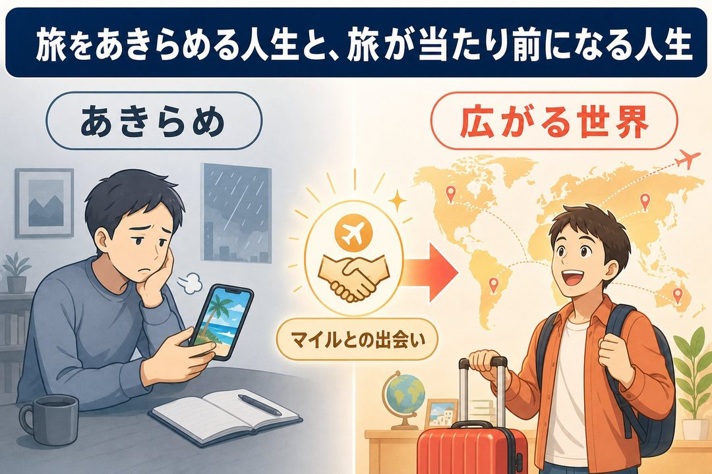
旅をあきらめる人生と、旅が当たり前になる人生
きっと、あなたの心の中にも、同じ声があると思います。
「クレジットカードで貯めようとしたけど、全然たまらなかった」という方もいるかもしれません。
10万円も使ったのに、旅行に必要な数字には遠くおよばない。
それで嫌になってしまう。
私も一度、そこでつまずきました。
あるいは、家族で旅行には行っているのに、マイルのことは何も知らないまま飛行機に乗ってきた方もいるはずです。
知らなかった、ただそれだけで、もらえるはずのものを取り逃してしまうのです。
でも、安心してください。
マイルは、日常の中で貯めていくものなのです。
特別な才能も、まとまったお金も要りません。
実際、週3日パートで働く主婦の方が、コツコツ貯めて家族旅行を実現した、なんて話も珍しくないのです。
必要なのは、根性でも器用さでもなく、正しい考え方をひとつ知っているかどうかだけなのだそうです。
この本は、マイルをまったく知らない、昔の私のような人のために書きました。
トモさんが私に教えてくれたことを、そのまま、やさしく、順番にお伝えしていきます。
むずかしい言葉は、ぜんぶ噛みくだきます。
覚えなくていいことは、覚えなくていいと書きます。
読み終えるころ、あなたはきっと、こう思っているはずです。
「これなら、私にもできそう」。
旅は、あきらめなくていいのです。
最後に、ひとつだけ質問をさせてください。
もし、お金のことを心配しなくていいとしたら——あなたは、どこへ行きたいですか。
すぐに答えが出なくても大丈夫。
この本を閉じるとき、もう一度、同じ質問をさせてくださいね。
さあ、いっしょに一歩を踏み出しましょう。
01第1章 マイルって何？世界を変える小さな翼
第1章 マイルって何？世界を変える小さな翼
「トモさん、マイルって……あの、飛行機のやつですよね？なんだか難しそうで、私にはずっと縁のない世界だと思ってました」
カフェの窓際で、そらさんは少し困った顔で切り出しました。
向かいに座るトモさんは、にこっと笑ってコーヒーカップを置きます。
「みんな最初はそう言うんだよ。
でもね、マイルって本当は、忙しい人ほど得をする仕組みなんだ。
今日はその入り口を、いちばんやさしいところからお話しするね」
そらさんは29歳。
旅は好きだけれど、お金と時間の余裕がなくて、ここ数年はまとまった旅行に行けていません。
一方のトモさんは、FPとしてお金の知識を活かしながらマイルを貯め続けて10年になる、頼れるマイルの達人です。
二人の会話を通して、あなたも一緒に「マイルの世界」の扉を開けていきましょう。
そもそもマイルって、なんですか？
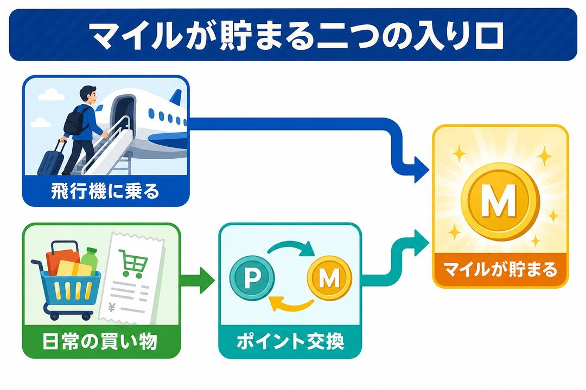
マイルが貯まる二つの入り口
「マイルっていうのはね、ひとことで言うと 航空会社が発行しているポイント制度 のことなんだ。
お店のポイントカードの、飛行機版だと思ってくれたらいいよ」
「あ、じゃあ、あのスーパーで貯まるポイントみたいなものですか？」
「そう、考え方はまったく同じ。
飛行機に乗ると、その距離に応じてマイルというポイントがもらえる。
それを貯めていくと、いつか無料で飛行機に乗れたりするんだ」
そらさんは、カップのふちを指でなぞりました。
「でも……どうして航空会社は、わざわざそんなものをくれるんですか？タダで配ったら、損しちゃう気がして」
「いい質問だね。
航空会社にとっていちばんうれしいのは、同じお客さんに、次もまた選んでもらうこと なんだ。
だからマイルは、常連さんへのお礼。
誰かをだます仕組みでも、抜け道でもないんだよ。
ここ、あとでもう一度出てくるから覚えておいてね」
そらさんは首をかしげます。
「でも、私ほとんど飛行機に乗らないんです。
じゃあ貯まりようがないですよね……」
「そこがいちばん大事なところ。
実はね、マイルは 飛行機に乗らなくても貯まる んだ」
「えっ、乗らないのに？」
「うん。
日々の買い物やクレジットカードの支払い、それにネットでの手続きなんかで貯めたポイントを、マイルに交換できる仕組みがあるんだ。
だから、飛行機に一度も乗らない月でも、マイルはコツコツ増やせるんだよ」
そらさんの目が、少しだけ丸くなりました。
「知らなかった……。
じゃあ、私みたいな人でも始められるってことですか」
「もちろん。
むしろ、そういう人のための本を、これから一緒に読んでいくんだ」
飛行機に乗らずに貯める「陸マイラー」
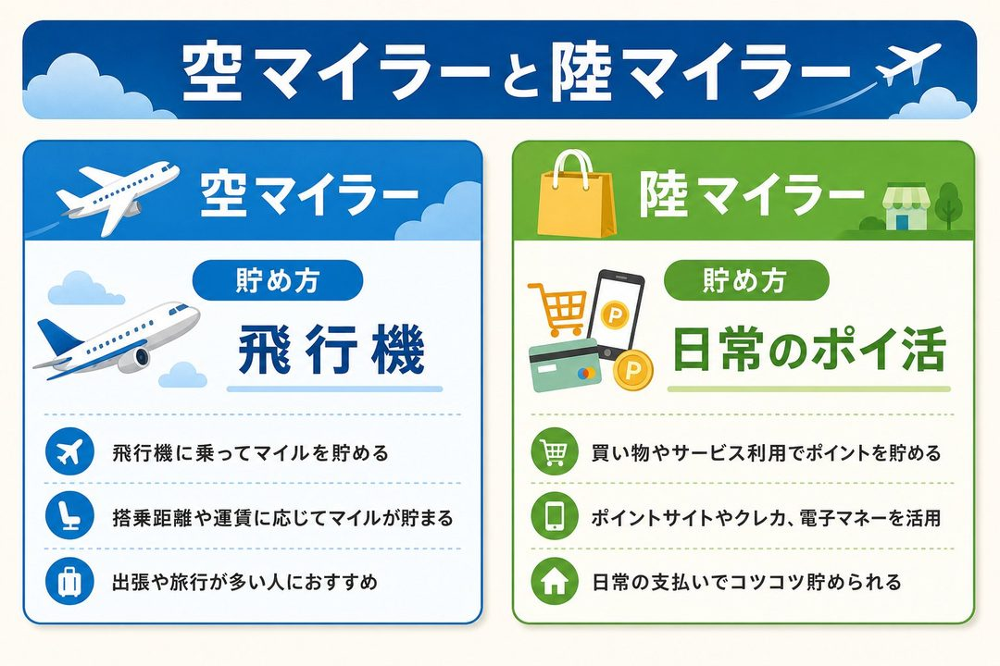
空マイラーと陸マイラー
「さっきの『乗らなくても貯まる』を実践している人たちのことを、陸マイラー って呼ぶんだよ」
「おかマイラー……？」
「そう、『陸（おか）』のマイラー。
飛行機にほとんど乗らず、日常の買い物やポイント活動、いわゆるポイ活でマイルを貯める人たちのこと。
空をよく飛ぶ出張族が『空マイラー』だとしたら、地上で地道に貯めるのが陸マイラーってわけ」
そらさんは思わず笑いました。
「なんだか、地味だけどたくましい響きですね」
「正直に言うとね、この言葉、ネットでは『せこい』なんて言われることもあるんだ。
それで怖くなって、やめちゃう人もいる」
「え……ちょっと、引いちゃうかもしれません」
「でもね、そらさん。
スーパーの特売日を狙って買い物に行くことを、せこいって言う人はいる？ 用意されている仕組みを、決められた通りに使っているだけ なんだ。
一部の声に、あなたの旅を止められる必要はないよ」
「地味に見えて、実はいちばん賢いんだよ。
だって、飛行機に乗るお金をかけずに、飛行機のチケットが手に入るんだから。
日々の支払いを少し工夫するだけで、気づいたら旅ができるくらい貯まっている。
それが陸マイラーの世界なんだ」
「私、完全にその『乗らない側』なので……逆にチャンスってことですか」
「そういうこと。
マイルは、忙しくて飛行機に乗る暇がない人こそ、地上で貯められる。
ここを知っているかどうかで、旅の景色が変わってくるんだよ」
1マイルの価値は、使い方で化ける
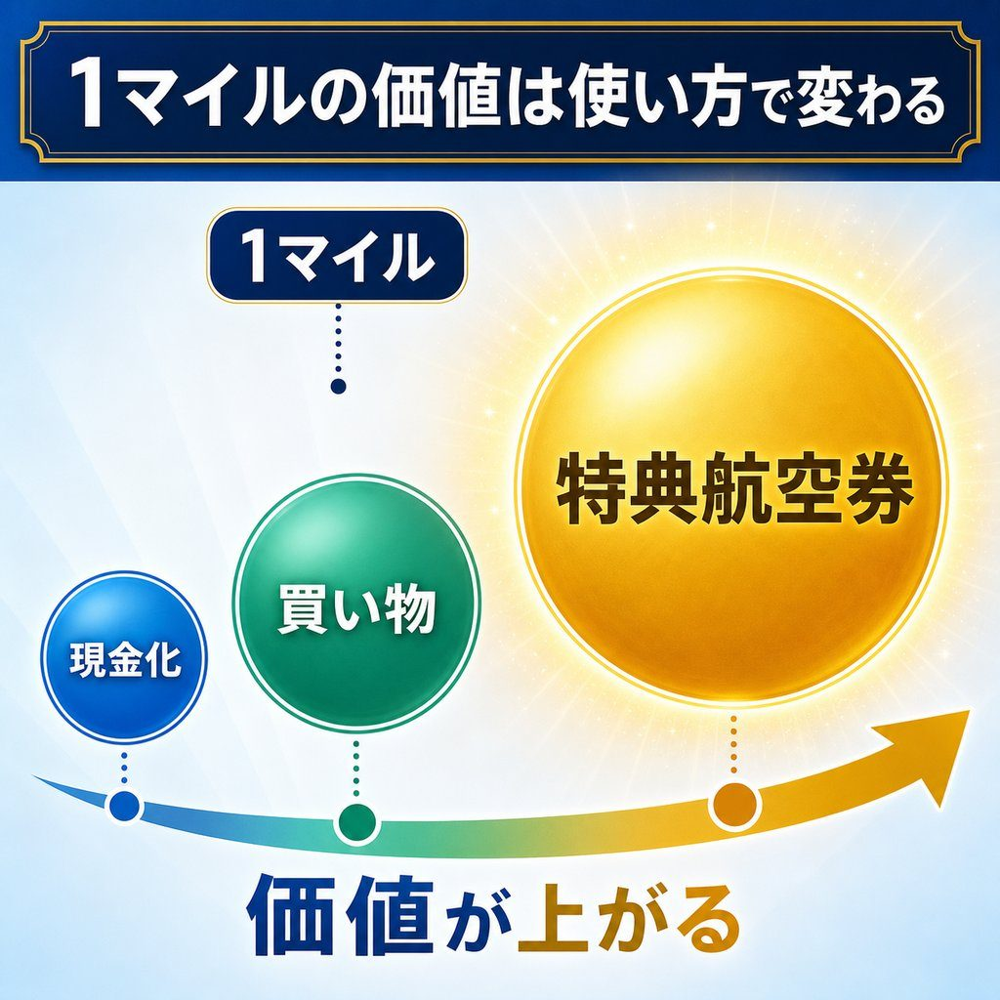
1マイルの価値は使い方で変わる
「ここでちょっと、マイルの『価値』の話をするね。
そらさん、1マイルっていくらだと思う？」
「うーん……1ポイント1円、みたいな感じですか？」
「惜しい。
実はマイルはね、使い方次第で1円にも、10円以上にもなるんだ。
同じ1マイルでも、化け方がまったく違うんだよ」
「同じ1マイルなのに、そんなに差が出るんですか？」
「出るんだ。
たとえばマイルを現金みたいなものに換えたり、普通の買い物に使ったりすると、1マイルあたりの価値はわりと低くなりがち。
でも、特典航空券、つまりマイルで交換する無料の航空券に使うと、価値がぐっと上がるんだ」
「どうして、旅に使うと価値が上がるんですか？」
「飛行機って、席が空っぽのまま飛んでも、お客さんが座っていても、かかる費用はほとんど変わらないでしょう。
だから空いた席をマイルのお客さんに開放しても、航空会社の痛みは小さい。
でも 私たちにとってその席は、現金なら何十万円もする席 なんだ。
この差が、1マイルの価値を押し上げてくれるんだよ」
そらさんは、ふと不安そうな顔になりました。
「……実は前に、『10万円使ったのに1,000マイルしか貯まらなかった』という書き込みを見たんです。
それで、やっぱり私には無理だなって」
「その声はよく聞くよ。
でもね、それは 貯める入り口が一つしかなかった んだ。
カードの支払いだけでコツコツだと、どうしても時間がかかる。
陸マイラーは、そこに別の入り口を足していく。
詳しくは次の章でね。
いまは『カードだけが道じゃない』とだけ覚えておいて」
トモさんは、そっと声のトーンを落としました。
「同じマイル数でも、路線や時期によって交換に必要なマイルは変わるから、具体的な数字はこの先で丁寧に見ていくけれど……ポイントはひとつ。
マイルは、旅に使うほどお得になる、ということ」
「イメージしやすく言うとね。
家族でハワイに行こうとすると、現金なら 40万円から60万円 くらいかかると言われている。
人数や時期で変わる目安だけど、決して小さな額じゃないでしょう」
「……はい。
うちには、ちょっと出せない金額です」
「その旅が、マイルなら手が届くところまで来る。
同じ『行きたい』が、行けない夢から、いつ行くかを決める計画に変わるんだ」
「なるほど……だから現金で高いチケットを買うより、ずっと割安に旅ができるんですね」
「その通り。
現金価値に置き換えて考えると、驚くほど安く遠くへ行ける。
これがマイルの、いちばんの醍醐味なんだ」
ANAとJAL、どっちの翼を選ぶ？
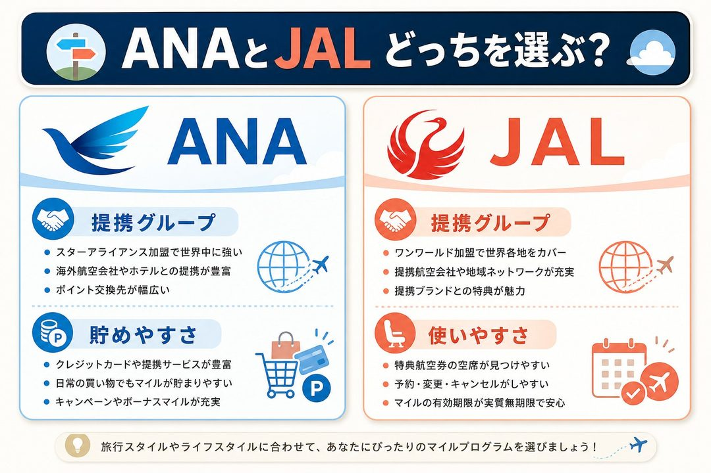
ANAとJAL どっちを選ぶ？
「日本でマイルを貯めるとき、まず知っておきたいのが、大きく二つの陣営があるってことなんだ。
ANAとJAL、この二大陣営だね」
「名前は聞いたことあります。
何が違うんですか？」
「それぞれ、世界の航空会社連合に入っているんだ。
ANAはスターアライアンスというグループ、JALはワンワールドというグループ。
この提携先が違うと、貯めたマイルで乗れる飛行機や行ける国も少しずつ変わってくるんだよ」
「連合、っていうと……なんだか、大げさですね」
「部活の連盟みたいなものだよ。
仲間同士だから、ANAのマイルなのに仲間の航空会社の便に乗れたりする。
貯めた翼が、思ったより遠くまで届く のはそのおかげなんだ」
「うーん、もうこの時点でちょっと難しい……」
「大丈夫、いまは名前を覚えなくていいんだ。
ざっくりした性格だけ知っておいて。
よく言われるのが、ANAは貯めやすいけれど特典航空券が取りにくい、JALはその逆 ということ」
「取りにくい、っていうのは？」
「人気の路線や時期は、マイルで取れる無料の座席に限りがあるんだ。
だからタイミングによっては予約が埋まっていることもある。
でもこれは、貯め方や予約のコツで十分カバーできるから、今は気にしないでいいよ」
「あの、欲張りかもしれませんけど……両方いっぺんに貯めるのは、だめですか？」
「気持ちはわかる！でも、最初はおすすめしないんだ。
二つに分けると、どちらも中途半端になって、どちらの特典航空券にも届かない まま期限が来ちゃう。
水を二つのコップに分けて注ぐと、どっちも半分でしょう。
旅に出られるのは、あふれるまで満たした一つのコップからなんだ」
「じゃあ、私はどっちを選べばいいんでしょう」
「選び方はシンプル。
普段使っているカードやポイントとの相性で決める のがいちばん。
あなたの生活にすっと馴染むほうが、結局いちばん貯まるんだよ。
ここも後の章でゆっくり一緒に考えていこうね」
未経験でも、忙しくても、怪しくもない
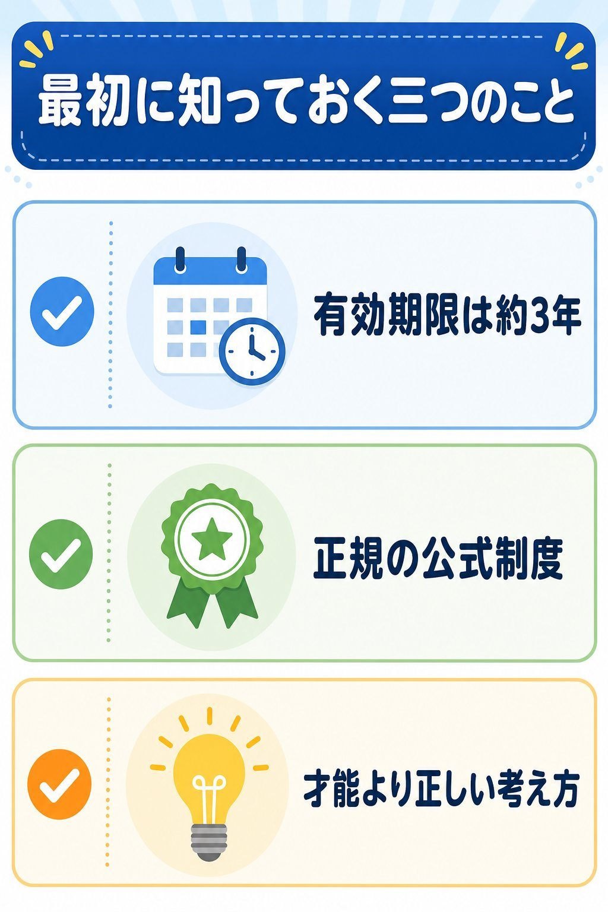
最初に知っておく三つのこと
「トモさん、正直に言っていいですか。
マイルって……なんだか、ちょっと怪しくないですか？そんなにお得なら、裏があるんじゃないかって」
トモさんは大きくうなずきました。
「その疑問、すごく健全だよ。
でも安心して。
マイルは 航空会社が公式に運営している、れっきとした正規のポイント制度 なんだ。
あやしい話でも、抜け道でもない。
ちゃんとした仕組みを、正しく使うだけ」
「でも、どうしてそんなにお得になるんでしょう。
どこかで誰かが、損をしていませんか？」
「じゃあ、種明かしをするね。
会社は、新しいお客さんに知ってもらうために宣伝にお金をかけているでしょう。
その宣伝費の一部が、私たち利用者に戻ってくる——ざっくり言うと、そういう流れなんだ。
会社は新しいお客さんと出会えて、私たちはポイントをもらえる。
誰かの財布から、こっそり抜き取っているわけじゃないんだよ」
「よかった……。
じゃあ、特別な才能とか、根性とかも要らないんですか？」
「要らないんだ。
必要なのは、正しい考え方だけ。
私の知り合いにね、週3日のパートで働きながら、家事も育児もしている主婦の方がいるんだ。
その人が、日常のちょっとした工夫だけで、家族旅行に行けるくらいのマイルを貯めたんだよ」
「週3のパートで……。
それなら、私にもできそうな気がしてきました」
「できるよ。
忙しい人ほど、地上でコツコツ貯める陸マイラーに向いているって、さっき話したでしょう。
才能じゃなくて、知っているかどうか。
それだけの差なんだ」
「でも、覚えることがたくさんありそうで……。
私、すぐ頭がいっぱいになっちゃうんです」
「全部を覚える必要はないんだ。
マイルは暗記の試験じゃなくて、道順 だから。
曲がり角に来たときに、そこだけ地図を見ればいい。
この本も、そういうふうに作ってあるよ」
「最後にひとつだけ、いま覚えておいてほしいことがあるんだ」とトモさんは指を一本立てました。
「マイルには有効期限があって、ANAもJALも、貯めたマイルはおよそ3年で期限を迎える んだ。
だから貯めっぱなしにせず、計画的に使うのがコツ。
細かいルールは後で説明するけれど、この約3年だけは、頭の隅に置いておいてね」
「3年って、長いような、短いような……」
「油断すると、あっという間だよ。
いつか使おうと温めていた 2万マイル を、ある日ログインしたら失っていた、という人もいるんだ。
マイルは 古いものから順に消えていく うえ、貯めた場所ごとに数え始める日が違うから気づきにくい。
ルールは見直されることもあるから、始めるときは公式サイトで最新を確かめてね」
「2万マイル……。
それって、旅行に行けたかもしれない分ですよね」
「そう。
だからこそ、貯めることより先に、行きたい場所を決める。
ゴールがあれば、期限に追われずにすむからね」
そらさんは、手帳に小さく「マイル＝約3年」とメモしました。
「なんだか、世界がちょっと広がった気がします。
飛行機のポイントだと思っていたものが、私の生活とつながって見えてきました」
「いい表情になったね」とトモさんは微笑みます。
「マイルはね、小さな翼なんだ。
日々の暮らしの中で少しずつ育てていくと、いつかあなたを、思いもよらない場所まで運んでくれる」
そらさんの胸に、久しぶりに旅への期待がふくらみました。
「じゃあトモさん、次はいよいよ……その翼の育て方、教えてもらえますか？」
「もちろん。
次の章では、飛行機に乗らないあなたが、日常の中でマイルをどうやって貯めていくのか。
その具体的な第一歩を、一緒に踏み出していきましょう」
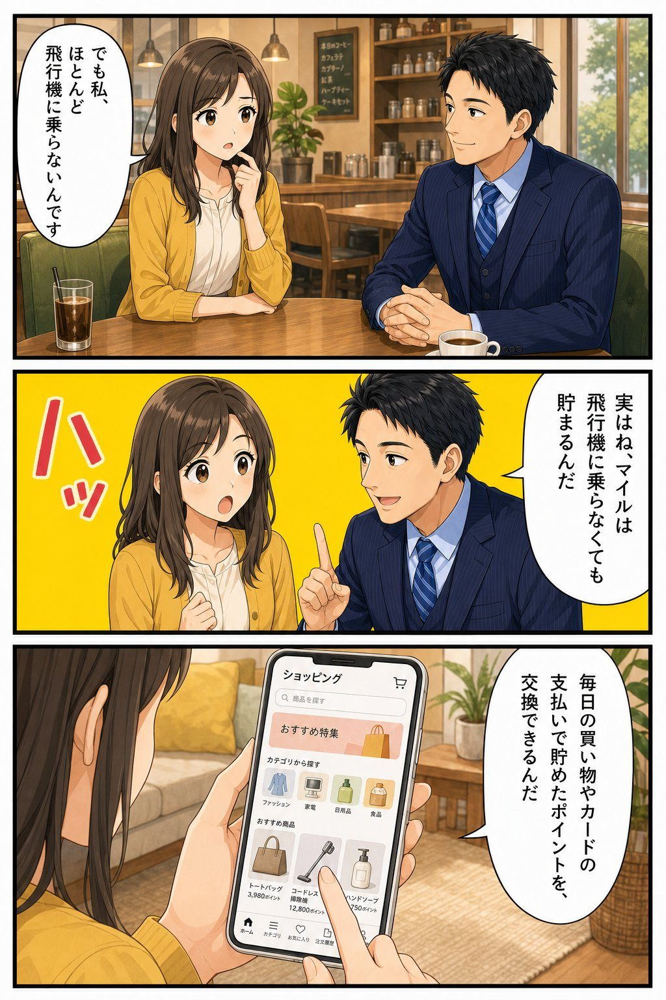
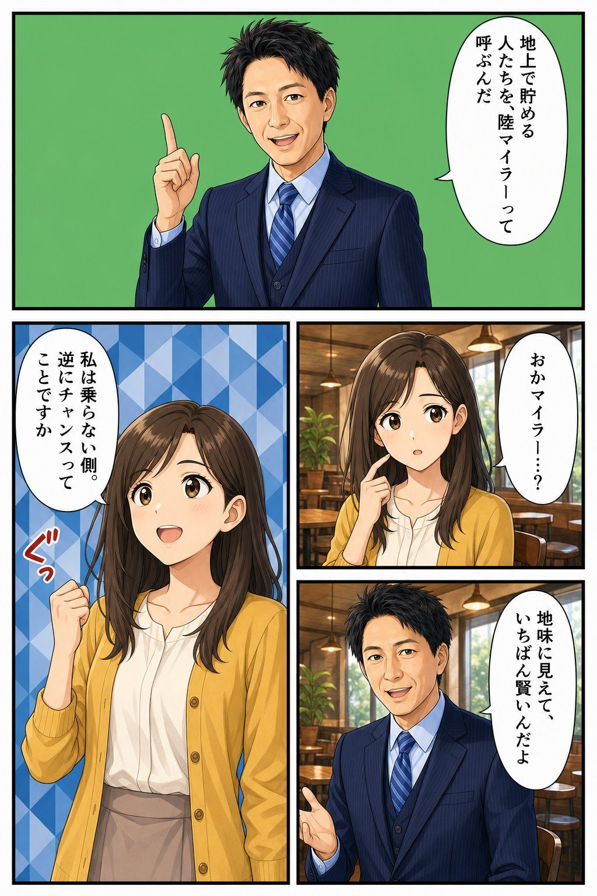
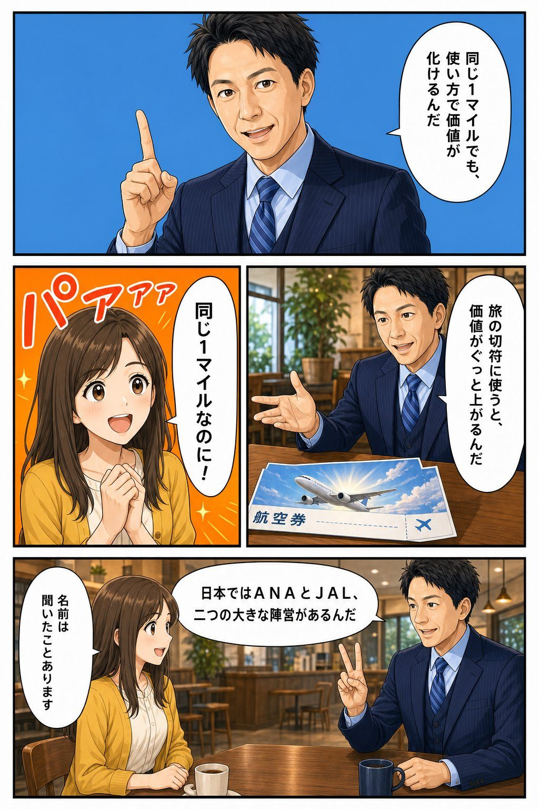
02第2章 ゼロから貯める！マイルの育て方
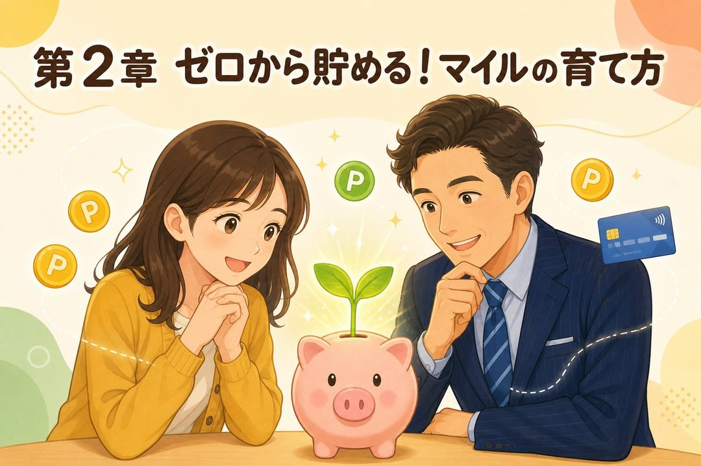
第2章 ゼロから貯める！マイルの育て方
第1章では、マイルが「空を飛ぶためのポイント」であり、貯めれば飛行機のチケットに換えられる、というお話をしました。
仕組みがわかると、次に気になるのはやっぱり「じゃあ、どうやって貯めるの？」というところですよね。
この章では、まったくのゼロからマイルを育てていく方法を、そらさんとトモさんの会話を通して見ていきます。
むずかしい専門用語は使いません。
読み終わるころには、「あ、これなら私にもできそう」と思ってもらえるはずです。
まず知ってほしい「がんばっても貯まらない」落とし穴
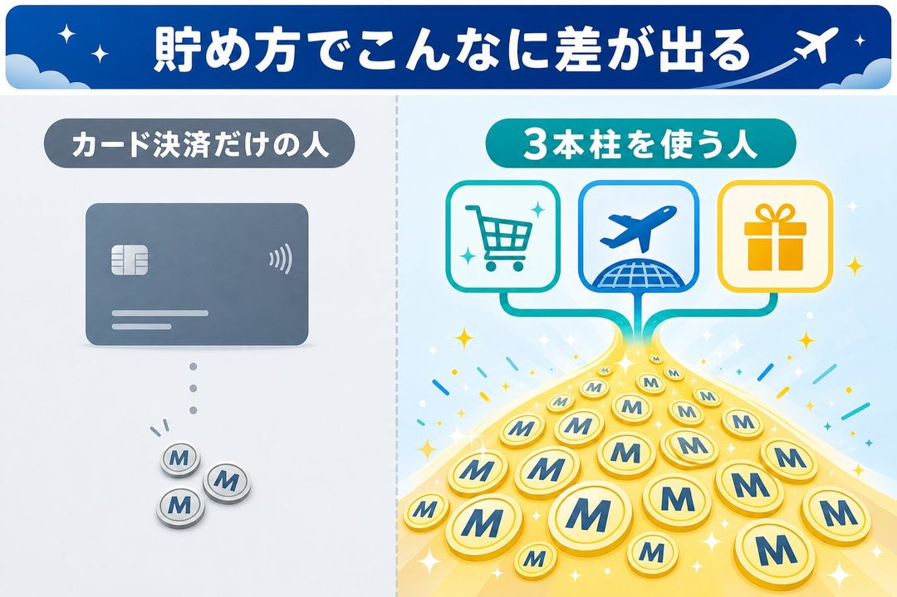
貯め方でこんなに差が出る
「マイル、始めてみたんです。
でも……全然貯まらなくて」
そらさんが、少ししょんぼりした顔で言いました。
「クレジットカードで買い物すればマイルが貯まるって聞いたから、光熱費も食費も全部カードにしたんです。
でも、何ヶ月かして確認したら、ほんのちょっとしか貯まってなくて。
これ、何年かかるんだろうって、心が折れちゃって」
「うんうん、その気持ちすごくわかる」とトモさんがうなずきます。
「実はね、そらさんがつまずいたところ、みんなが最初につまずくところなんだよ」
カードで払った金額に対して、実際にマイルへ変わる割合を「還元率」と呼びます。
これはカードの支払いで、どれくらいマイルが返ってくるかを表す言葉です。
多くのカードでは、この割合が決して高くありません。
日常の買い物だけでコツコツ貯めようとすると、まとまったマイルになるまでにかなりの時間がかかるのが現実なんです。
「たとえば、100円払って1マイル。
よく見かける条件だよね。
じゃあ、10万円分の支払いで、いくつ貯まると思う？」
そらさんは指を折って数え、はっとした顔になりました。
「……1,000マイル、ですか。
10万円も使って、たったの1,000マイル？」
「そう。
『10万円使って1,000マイル。
全然貯まらない』——これ、マイルを始めた人がいちばん多く漏らすため息なんだよ」
条件はカードや時期によって変わるので、この数字はあくまで目安です。
でも、桁の感覚としては、そう遠くありません。
「じゃあ、家族で旅行できるくらい貯めようと思ったら……何年かかるんですか」
「うん。
この計算のままだと、気が遠くなる話だよね。
だからみんな『マイルって、しょっちゅう出張する人のものでしょ』って、あきらめちゃうんだ」
「でもね、それはそらさんのがんばりが足りないんじゃないの。
貯め方の入口をひとつしか使っていなかった、それだけなんだよ」
そう、カード決済は貯め方の「ひとつ」でしかありません。
ここを勘違いしたまま突き進むと、努力のわりに成果が出ずに挫折してしまう。
まずはこの落とし穴を知っておくことが、遠回りしないための第一歩なのです。
言いかえれば、そらさんに足りなかったのは努力ではなく、地図でした。
歩く速さは十分なのに、細い一本道だけを選んで歩いていた。
だとしたら、やることはひとつ。
ほかにも道があることを、知ればいいのです。
マイルが育つ「3本柱」の全体像
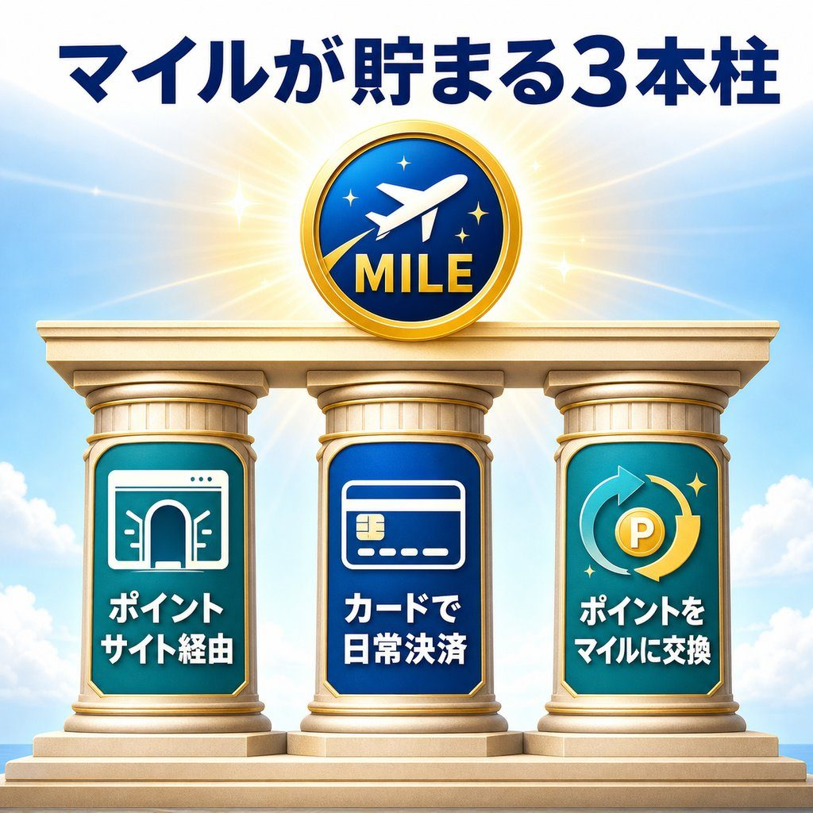
マイルが貯まる3本柱
「じゃあ、どうすればいいんですか？」
そらさんが身を乗り出します。
トモさんは指を三本立てて、にっこり笑いました。
「マイルを育てるコツは、大きく3つの柱を組み合わせること。
この3本柱がそろって初めて、貯まるスピードがぐっと上がるんだ」
柱の一つ目は、ポイントサイトを経由することです。
ポイントサイトというのは、そのサイトを通してカードを作ったり買い物をしたりすると、お店のポイントとは別に「独自のポイント」がもらえる仲介サイトのことです。
ハピタスやモッピーといったサービスが知られています。
「たとえば、あるカードを作りたいと思ったとき。
公式サイトから直接申し込むこともできるけど、いったんポイントサイトを経由してから申し込むと、それだけでまとまったポイントがもらえたりするんだ」
「え、経由するだけで？」
「そう。
ここが一番おいしい入口。
カード決済でコツコツ貯めるより、ポイントサイト経由のほうが一度に大きく貯まりやすいんだよ。
ただし、もらえる量や条件は時期でよく変わるから、そのつど最新の情報を確認するのが大事ね」
そらさんが、ちょっと言いにくそうに口を開きました。
「あの……マイルそのものは怪しくないって、この前に教わりましたよね。
でも、ポイントサイトのほうは……？ 通るだけでポイントがもらえるなんて、裏があるんじゃないかって」
「いい質問！ でもね、ちゃんと理由があるの」とトモさん。
「カード会社やお店は、新しいお客さんに来てほしくて宣伝にお金をかけてるでしょう。
ポイントサイトは、その宣伝を代わりに引き受けてる場所なんだ。
だから『うちを通してお客さんが来てくれたら、宣伝費の一部をあなたにも分けますね』って約束が成り立つの。
誰かが損をして、そらさんが得をしてるわけじゃないんだよ」
「なるほど……宣伝費の、おすそ分け」
「そういうこと。
むしろ知らずに公式サイトへ直行するほうが、もらえるはずのおすそ分けを取り逃してるんだよ」
差の大きさも見ておきましょう。
あるカードを一枚つくるだけで14,000ポイントがもらえる案件が出ていたこともあります。
カード決済で1マイルずつ積むのとは、そもそも桁がちがうのです。
ただし金額も条件も時期で大きく動きます。
覚えるべきは数字ではなく、「入口を選ぶだけでこれだけ差がつく」という感覚のほうです。
柱の二つ目は、マイルが貯まるカードに日常のお支払いをまとめることです。
「光熱費、スマホ代、食費、ネットの買い物。
これをあちこちのカードでバラバラに払うと、ポイントが散らばっちゃう。
ひとつのカードに集めれば、生活しているだけで自動的に貯まっていくんだ」
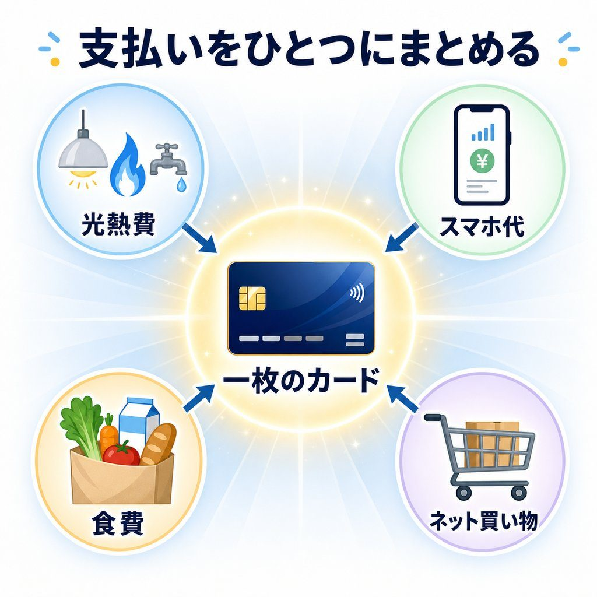
支払いをひとつにまとめる
「わたし、支払いバラバラでした……」
「多いんだよ、それ。
中央に一枚、って意識するだけで変わるから」
「でもそれ、毎日なにか作業がいるんですか？ わたし、家のことでいっぱいいっぱいで……」
「ううん、逆なの。
最初にカードを一枚決めて、支払い先をそっちに寄せる。
それで終わり。
あとはいつもどおり暮らしてるだけで貯まっていく。
手間がかかるのは、いちばん最初だけなんだよ」
柱の三つ目は、貯めたポイントをマイルに移すことです。
ポイントサイトでもらったポイントも、カードで貯まったポイントも、そのままでは飛行機には乗れません。
マイルに交換して、はじめて空を飛ぶ力になります。
「このとき意識してほしいのが、さっき出てきた還元率。
どのルートを通ってマイルに換えるかで、最終的なマイルの量が変わってくるんだ。
同じポイントでも、交換の道すじしだいで手にできるマイルが増えたり減ったりするんだよ」
「なんだか、お金の両替みたいですね」
「まさにそう。
レートのいい両替所を選ぶ感覚に近いかな。
それなのに、ここを知らないまま、目の前にあった交換ボタンをなんとなく押しちゃう人が本当に多いの。
せっかく貯めたのに、もったいないよね」
この3本柱を、一本ずつではなく組み合わせて回していく。
それが、ゼロから効率よくマイルを育てるいちばんの近道なのです。
ポイントサイトで大きく入れて、日常の支払いで下から積み上げ、いい道すじでマイルへ移す。
そらさんがつまずいた理由も、もう見えました。
真ん中の一本だけに、全部を背負わせていたのです。
無理をしないのが、いちばん続くコツ
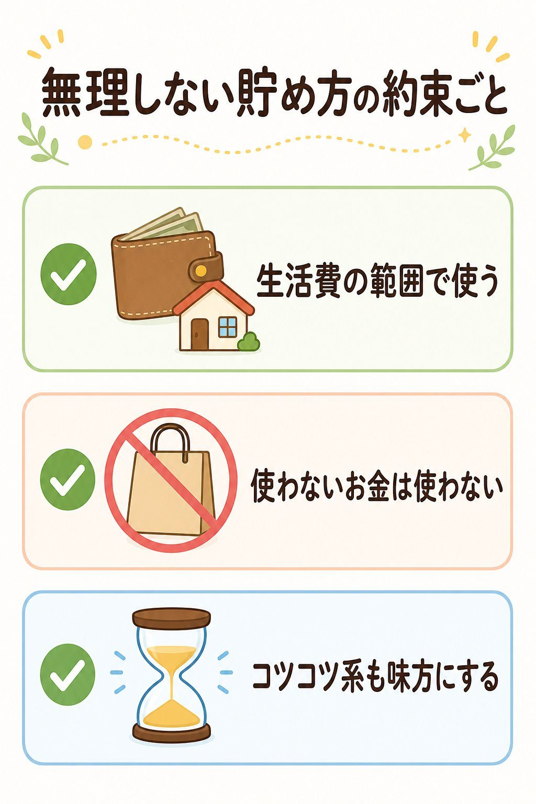
無理しない貯め方の約束ごと
ここで、トモさんがちょっと真剣な顔になりました。
「3本柱を教えると、たまにやりすぎちゃう人がいるんだ。
マイルを貯めたいあまり、必要ないものまで買っちゃう。
これは、いちばんやっちゃいけないこと」
「あ……ポイントのために、つい」
「そう、それが本末転倒。
マイルはあくまで、いつもの生活費の範囲で貯めるもの。
使わないはずだったお金を、マイルほしさに使ったら、旅行代を先に払っているのと変わらないでしょう」
大切なのは、もともと出ていくお金の「支払い方」を変えるだけ、という考え方です。
食費も光熱費も、どのみち払うもの。
その払い方を工夫してマイルに変えていく。
だから家計に負担はかかりません。
「財布から出ていく金額は、昨日までと1円も変わらない。
変えるのは、出ていく道すじだけ。
ここを踏み外さない限り、マイル貯めで家計が苦しくなることはないから」
「それにね、大きく貯める柱だけじゃなくて、コツコツ系も味方につけるといいよ」
コツコツ系というのは、スマホのポイ活アプリや、レシートを撮ると少しポイントがもらえるサービス、アンケートに答えて貯めるものなど、すきま時間で少しずつ積み上げていく方法のことです。
「ひとつひとつは小さいけど、通勤中とか寝る前とか、ちょっとした時間で続けられるのがいいところ。
柱で大きく貯めて、コツコツ系ですきまを埋める。
この二段構えが、無理なく長く続くコツなんだ」
「大きい流れと、小さい流れ。
両方あると安心ですね」
「うん。
ただ、コツコツ系は『やらなきゃ』と思った瞬間に苦行になるから、気が向いた日だけでいいの。
何日か休んでも、柱のほうは勝手に育っててくれるからね」
目的地を決めれば、心は折れない
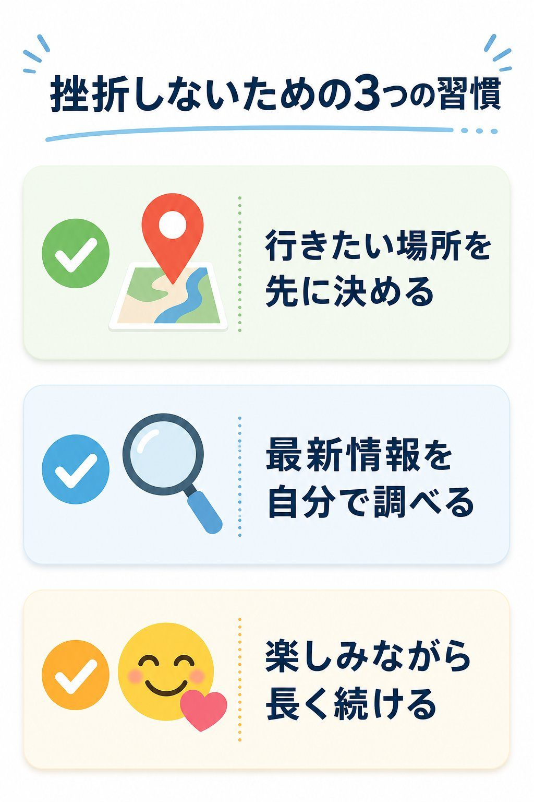
挫折しないための3つの習慣
「トモさん、正直に言うと……途中でまた心が折れないか、ちょっと不安です」
そらさんの本音に、トモさんは優しく答えました。
「わかる。
だからね、貯め方より先に決めてほしいことがあるんだ。
それは、どこへ行きたいか、という目的地を先に決めること」
「目的地、ですか？」
「そう。
ただ数字を増やすだけだと、途中でしんどくなる。
でも『あの島のビーチに行くんだ』とか『家族であの街を歩くんだ』って決めておくと、貯まっていくマイルがぜんぶ、その景色に近づく一歩に見えてくるんだ。
目標があると、人はがんばれるんだよ」
たとえば、家族でハワイ。
現金なら、目安として40万円から60万円ほどかかる旅です（時期や人数で変わります）。
数字だけ見れば、考える前に「うちには無理」と扉を閉じてしまう金額かもしれません。
でも、先に目的地と決めてしまうと景色が変わります。
「行けない」が「いつか行く」に変わり、今日の支払い一回一回が、その景色に近づく一歩になるのです。
もうひとつ、トモさんが強調したことがあります。
それは、マイルの世界のルールは変わりやすい、ということ。
「ポイントサイトのもらえる量も、マイルへの交換のしくみも、けっこう頻繁に見直されるんだ。
だから、特定のルート名を丸暗記しても、しばらくすると変わってることがある」
実際、かつて「定番中の定番」と呼ばれた交換の道すじが、ある日を境に使えなくなり、別の道すじが役目を引き継いだ、ということが何度も起きています。
だからこの本では、特定のルート名を「これが正解です」とは書きません。
書いたそばから古くなって、あなたを迷わせてしまうからです。
「え、じゃあ覚えても意味ない……？」
「ううん、覚えるべきは名前じゃなくて『考え方』のほう。
ポイントサイトを経由して、いい道すじでマイルに換える。
この流れさえ頭に入っていれば、細かいルールが変わっても対応できるんだ。
あとは、そのつど公式サイトや最新の情報を自分で確認する習慣をつけておけば大丈夫」
「調べるって言っても、やることは単純だよ。
マイルのことならANAやJALの公式サイト、ポイントのことならそのサイトの公式のお知らせを見る。
それだけ。
大事なところは自分の目で確かめる。
このクセひとつで、この先ずっと迷わなくなるから」
「名前じゃなくて、流れと調べるクセ。
メモしておきます」
「うん。
そしてね、いちばん大事なこと。
無理せず、長く、楽しみながら。
マイルは苦行じゃなくて、旅への助走なんだから。
焦らずいこうね」
そらさんの表情が、最初のしょんぼり顔から、すっかり前向きなものに変わっていました。
貯め方の全体像が見えて、心の持ち方までわかると、不安はわくわくに変わっていくものです。
さあ、貯める道すじが見えてきました。
でも、マイルは貯めて終わりではありません。
むしろ、ここからが本番。
次の第3章では、コツコツ育てたマイルを「どう使えば、いちばんお得に、いちばん心に残る旅になるのか」を見ていきます。
貯めたマイルが、どんな景色に変わっていくのか。
楽しみにしていてくださいね。
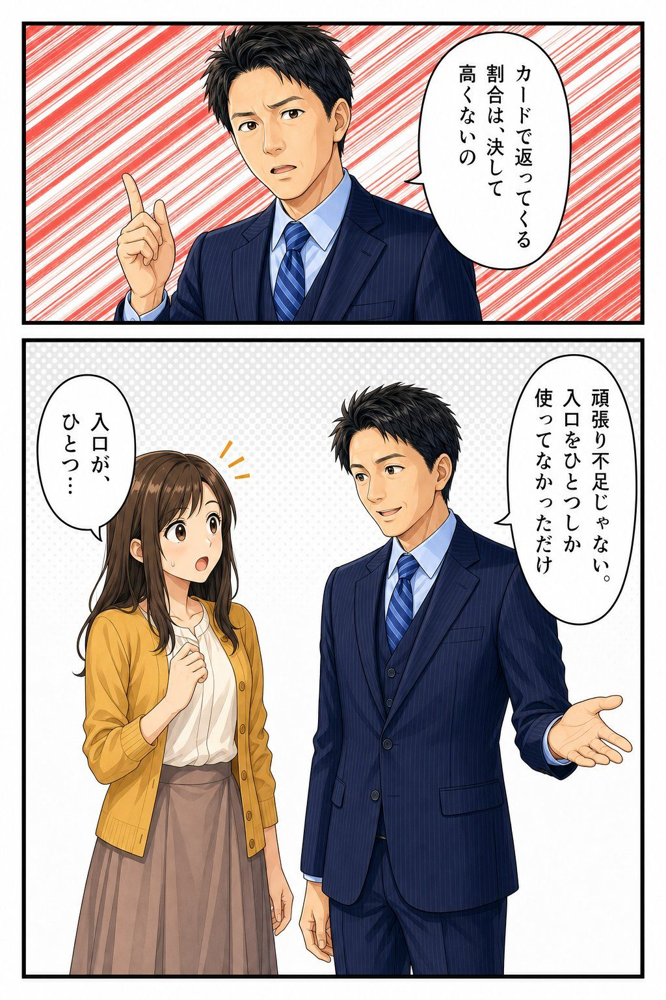
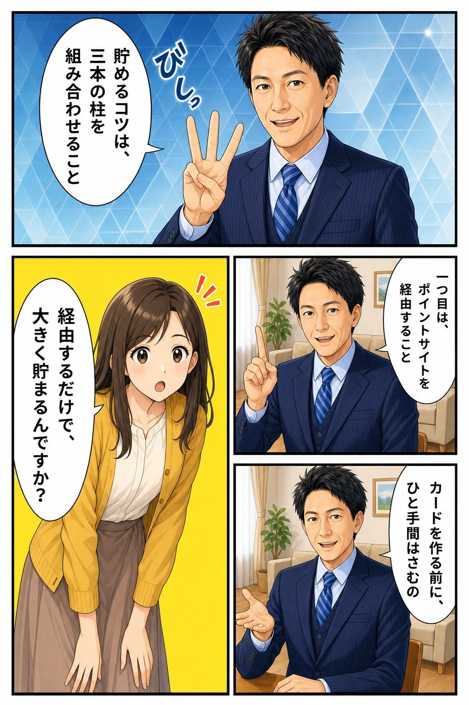
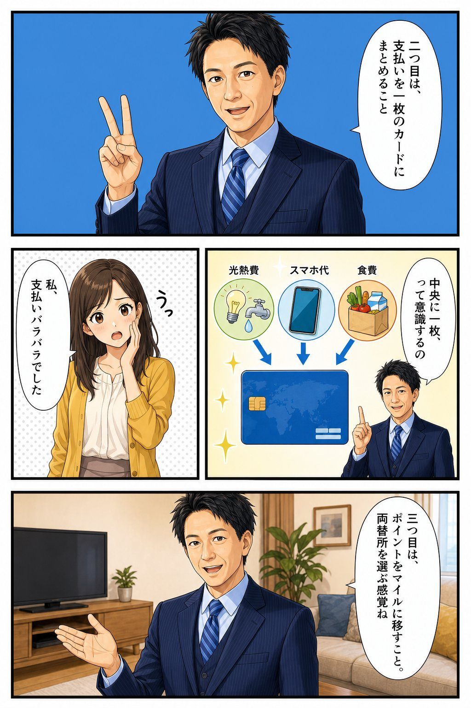
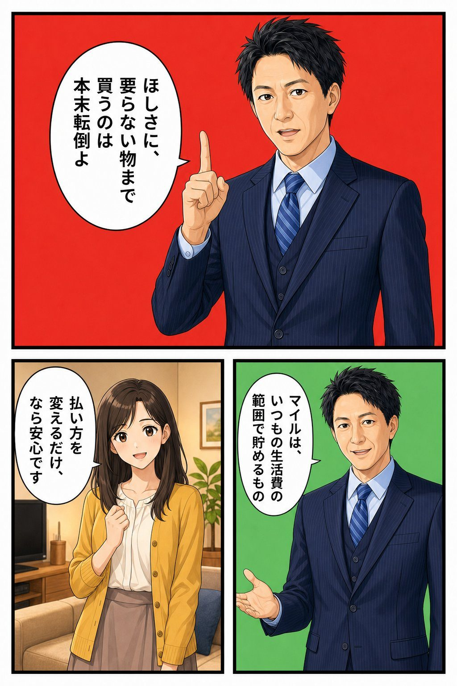
03第3章 貯めたマイルを、夢に変える使い方
第3章 貯めたマイルを、夢に変える使い方
第2章では、毎日の買い物や支払いを少しずつマイルに変えていく「貯め方」を見てきました。
コツコツ積み上がっていく数字を眺めるのは、それだけでちょっと楽しいものです。
でも、マイルは貯めた先にこそ本当の意味があります。
この章では、貯めたマイルを実際の旅へと変えていく「使い方」を、そらとトモさんの会話を通してじっくり見ていきましょう。
「トモさん、口座のマイルがちょっとずつ増えてきたんです。
でも、これで本当に旅行できるんですか?」
そらの目は期待と不安が半分ずつ。
トモさんは、コーヒーを一口飲んでにっこり笑いました。
「できるよ。
むしろ、ここからが本番。
貯めるのは準備運動で、使う瞬間がマラソンのゴールテープなんだから」
マイルの一番お得な使い道は「特典航空券」
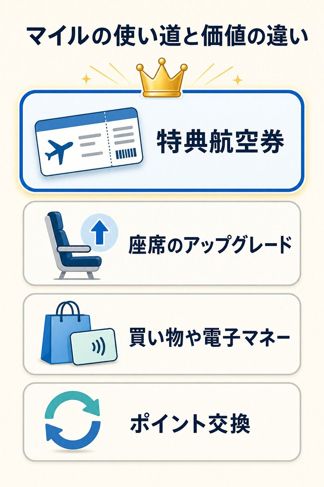
マイルの使い道と価値の違い
マイルにはいくつかの使い道があります。
買い物に使ったり、電子マネーに交換したり、座席をワンランク上げるアップグレードに使ったり。
でも、トモさんがまず教えてくれたのは、たったひとつのシンプルな結論でした。
「いろいろあるけど、マイルの一番お得な使い道は、はっきりしてるんだ。
それが特典航空券」
特典航空券とは、貯めたマイルを飛行機のチケットに交換して、実際にその便に乗ることを指します。
現金で買えば数万円から、時には数十万円するチケットが、マイルという「もう払い終えた費用」で手に入る。
だからこそ、多くのマイル愛好家が特典航空券を最終目的地に据えているのです。
「電子マネーに換えるのも便利だけど、その場合の価値はだいたい1マイルあたり1円前後にとどまることが多いんだ。
でもね、特典航空券に使うと、その価値がぐんと跳ね上がる。
同じマイルなのに、使い方ひとつでこんなに変わるんだよ」
そらは首をかしげました。
「でも、スーパーの支払いに使えるなら、そっちのほうが手軽じゃないですか?」
「手軽さでいえば、そのとおり」とトモさんは頷きます。
「でもね、買い物や電子マネーに使うのは、マイルを『お金の代わり』にすることなんだ。
お金の代わりであるかぎり、1マイルはどこまでいっても1円ぶん。
天井が決まってるの。
でも特典航空券は、マイルを『座席』と交換する。
座席の値札しだいで、1マイルが背負ってくれる金額が変わるんだよ」
そらは思わず前のめりになりました。
「同じマイルなのに、そんなに差が出るんですか?」
行き先別・必要マイルの目安を知っておく
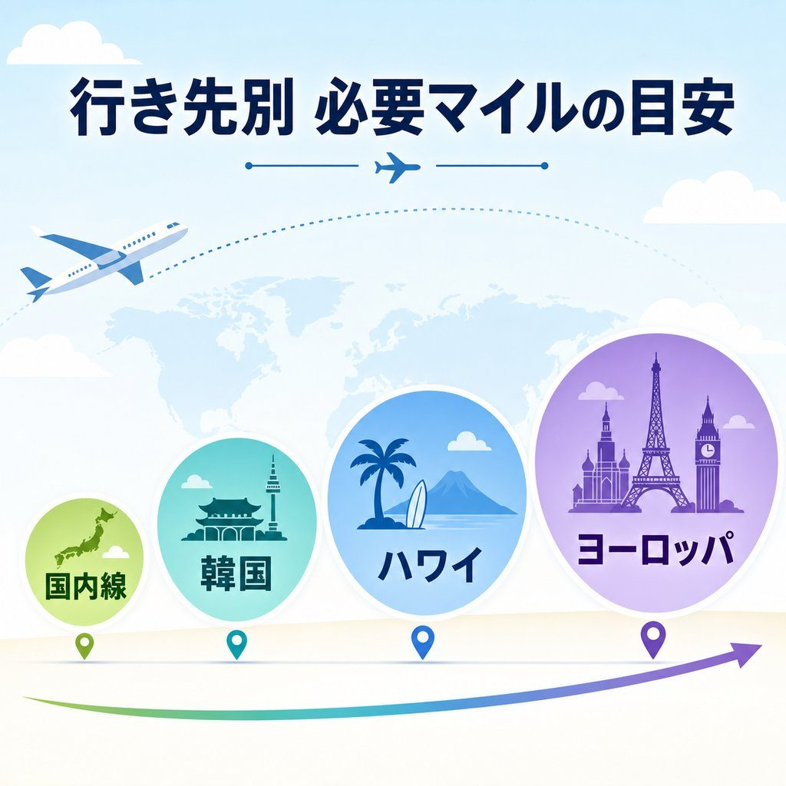
行き先別 必要マイルの目安
「じゃあ、どのくらい貯まれば、どこへ行けるんですか?」
そらの質問に、トモさんは「あくまで目安だよ」と何度も念を押しながら教えてくれました。
ここで大事なのは、必要マイル数は路線や時期によって変わるということ。
同じ行き先でも、繁忙期とオフシーズンでは必要な数が違いますし、航空会社ごとにも差があります。
ですから、次に挙げる数字はすべて「だいたいの見当」として受け取ってください。
実際に予約する前に、必ず利用する航空会社の公式サイトで最新の必要マイル数を確認しましょう。
国内線の往復なら、15,000マイル前後から狙えるのが一般的な目安です。
韓国など近距離の海外往復も、同じく15,000マイル前後からというケースが多く、初めての特典航空券デビューにはちょうどよい距離感といえます。
「近場ならけっこう早く手が届くんですね!」と声を弾ませるそらに、トモさんは「そう、まずはここを目標にするのがおすすめ」と頷きます。
そこから距離が伸びると、必要なマイルも増えていきます。
ハワイ往復のエコノミークラスなら40,000マイルからが目安。
そして、ここからが面白いところ。
同じハワイでも、ゆったり眠れるビジネスクラスになると、8万から9万マイル台の例が見られます。
さらに遠く、ヨーロッパ往復のビジネスクラスともなると、110,000マイル前後という例もあります。
ここでそらが、はっと顔を上げました。
「あの、この数字って……一人分ですよね?」
「いいところに気づいたね。
そう、人数分いる」とトモさん。
「だから家族で行きたいなら、それぞれが自分の分を貯めて持ち寄る、っていう考え方をする人が多いんだ。
一人で全員分を背負おうとすると気が遠くなるけど、分担すればぐっと現実的になるよ」
「数字だけ見ると、遠くて上のクラスほど必要マイルが多くて損に感じるでしょ? でも、実はその逆。
ここに、マイルの一番おいしい秘密が隠れてるんだ」
1マイルの価値が最大になるのは「長距離・上級クラス」
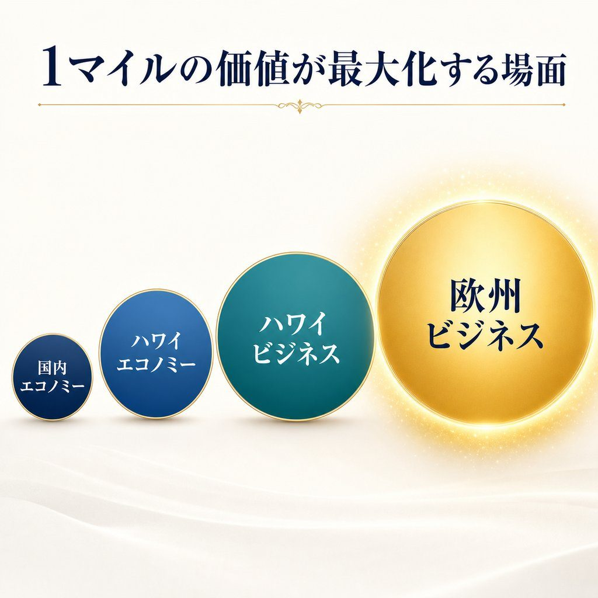
1マイルの価値が最大化する場面
トモさんは、紙にペンを走らせながら説明を続けました。
「たとえばね、ヨーロッパ往復のビジネスクラスを現金で買おうとすると、時期にもよるけど60万から150万円くらいすることも珍しくないんだ。
それが特典航空券なら、貯めたマイルだけで手に入る。
この差、すごくない?」
そらは目を丸くしました。
「60万円のチケットが、マイルで……」
「もちろん、燃油代とか税金は別にかかるんだけどね。
それでも、現金価格とマイルの必要数を比べると、長距離で上級クラスになるほど1マイルあたりの価値が大きくなるんだ。
近距離のエコノミーを何度も取るのももちろんアリだけど、いつか一度は、遠くのビジネスクラスを狙ってみてほしいな」
なぜ、そんなことが起きるのでしょうか。
行き先が遠くなり、クラスが上がれば、たしかに必要なマイルは増えます。
でも、現金価格の上がり方のほうが、必要マイルの増え方よりずっと急なのです。
マイルの目盛りがゆっくり階段を上っているあいだに、現金の値札はエレベーターで駆け上がっていく。
この「上がり方の差」こそが、1マイルの価値を押し上げている正体です。
実際、マイルを使って44,940円でビジネスクラスに搭乗できた——通常運賃のおよそ10分の1——という体験談もあります。
同じ席で同じ空を飛ぶのに、支払う額がひと桁違うのです。
ここが、マイルという仕組みのいちばん夢のある部分です。
同じ1マイルでも、近距離エコノミーで使えば2円強の価値、長距離のビジネスクラスで使えば数円分の価値に化けることがある。
だからこそ、1マイルの価値が最大化するのは長距離かつ上級クラスだと覚えておくと、目標が立てやすくなります。
「貯めるのが大変な分、大きな夢に使うと元が取れる感覚があるんですね」
「そういうこと。
ご褒美は、うんと豪華にね」
「無料」じゃない?燃油サーチャージの話
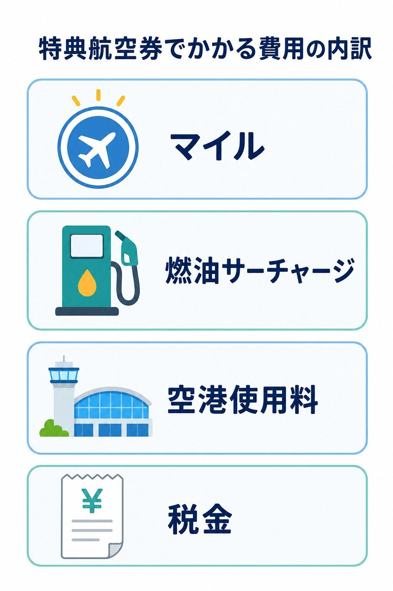
特典航空券でかかる費用の内訳
ここでトモさんは、少し表情を引き締めました。
「そらさん、ひとつだけ気をつけてほしいことがあるんだ。
特典航空券は『マイルで交換するチケット』だけど、実は完全に無料じゃないんだよ」
そらは驚きます。
「えっ、マイルを使うのに、まだお金がかかるんですか?」
かかることがあります。
その代表が燃油サーチャージです。
これは燃料価格の変動に応じて航空券に上乗せされる費用で、マイルで座席を交換しても別途支払いが必要になります。
ほかにも空港使用料や税金がかかるため、特典航空券はマイルといくらかの現金で手に入るもの、と理解しておくと安心です。
「たとえばハワイ線だと、燃油サーチャージだけで往復8万円ほどかかった例もあるんだ。
これも時期や燃料価格でけっこう変わるから、予約のときに必ず確認してね」
そらの胸を、小さな不安がよぎりました。
マイルを使い切ったあとで、思わぬ請求が来たらどうしよう——。
でも、そこは心配いりません。
これらの費用は予約画面にきちんと表示されます。
必要なマイル数と支払う現金の額、その両方を目で確かめてから確定ボタンを押す仕組みです。
そらが「けっこうしますね……」とつぶやくと、トモさんは「でも、抜け道もあるんだよ」と声をひそめました。
「実はね、燃油サーチャージがかからない航空会社を選んで発券すると、この費用を避けられる場合があるんだ。
貯めたマイルはそのままに、提携している別の航空会社の便を予約する、という上級テクニック。
慣れてきたら、こういう工夫で費用をぐっと抑えられるようになるよ」
これは少し発展的な話なので、今の段階では「特典航空券にもマイル以外の費用がかかることがある」「発券のしかたを工夫すると抑えられることがある」という二点を覚えておけば十分です。
「改悪」に一喜一憂しない心構え
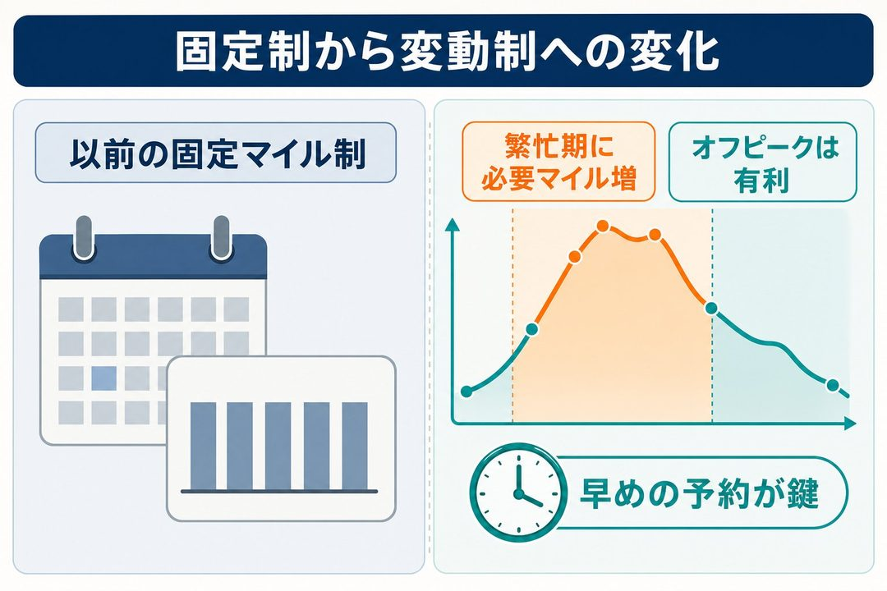
固定制から変動制への変化
マイルの世界には、「改悪」という少しどきっとする言葉があります。
これは、必要マイル数が増えたり、条件が厳しくなったりする制度変更のことです。
「昔はね、この路線は何マイル、って感じで固定マイル制だったんだ。
行き先ごとに必要マイルがきっちり決まってた。
でも最近は、ダイナミックプライシングっていう変動制に移っていく流れがあってね」
ダイナミックプライシングとは、需要に応じて必要マイル数が上下する仕組みのこと。
ホテルや航空券の値段が繁忙期に上がるのと同じ発想です。
つまり、混み合う時期は必要マイルが増えることがある、というわけです。
「それって、私たちには不利になっちゃうんじゃ……」と不安げなそらに、トモさんは優しく首を振りました。
「たしかに嘆きたくなる気持ちはわかる。
でもね、変動制って裏を返せば、すいてる時期を狙えば少ないマイルで乗れるってことでもあるんだ。
だから私は、改悪のニュースに一喜一憂するより、今できることに目を向けるようにしてる」
その「今できること」の代表が、早めの予約とオフピークを狙うことです。
繁忙期を避けて閑散期を選ぶだけで、必要マイルが抑えられることがあります。
制度は変わっても、賢く立ち回る余地はいつでも残されているのです。
「ルールに文句を言っても、席は一つも増えないからね。
でも、動くのが早ければ席は取れる。
それだけの話なんだよ」
予約は「早い者勝ち」。使ってこそマイル
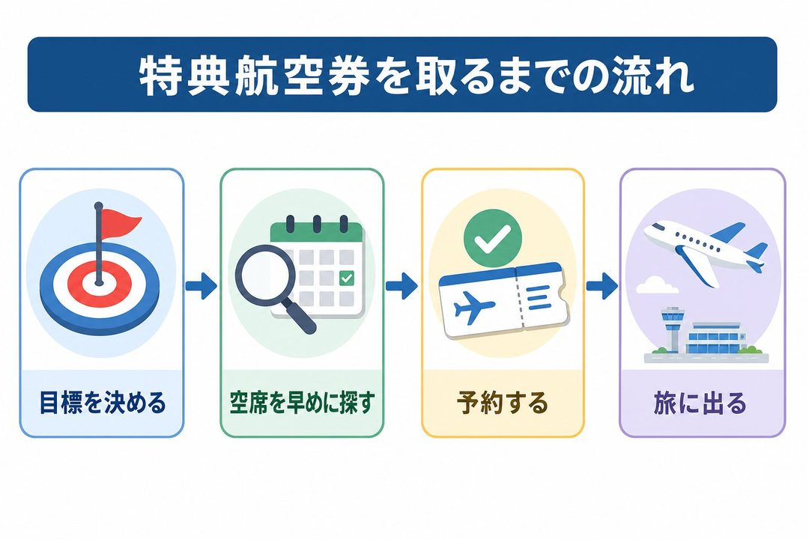
特典航空券を取るまでの流れ
最後に、トモさんがもっとも力を込めて伝えたのが、予約のタイミングと使う勇気の話でした。
「特典航空券にはね、路線ごとに座席の枠があるんだ。
人気の路線や連休は、みんなが同じ席を狙うから、早い者勝ちになりやすい」
だからこそ、予約はできるだけ早く動くことが大切です。
多くの航空会社では、出発のかなり前から予約を受け付けています。
行きたい時期が決まったら、受付開始と同時に空席を探すくらいの気持ちでいると、希望の便を押さえやすくなります。
「でも、そんなに取り合いなら、私みたいな初心者は結局取れないんじゃ……」
トモさんはきっぱり答えました。
「よく言われるのはね、ANAは貯めやすいけれど特典航空券が取りにくい、JALは貯めにくいけれど取りやすい、って。
でも、取りにくいと言われる路線でも、日にちを一日ずらす、出発する空港を変える、季節をずらす——工夫の余地はいくらでもある。
『満席だから無理』とすぐあきらめる人が多いぶん、粘った人のところに席は回ってくるんだよ」
「せっかく貯めたのに、席が取れなくて使えないのは一番もったいないからね」
そして、トモさんはそらの目をまっすぐ見て、こう締めくくりました。
「でもね、そらさん。
一番伝えたいのはこれなんだ。
マイルは、貯めるだけで満足しちゃう人がすごく多い。
数字が増えるのを眺めて、なんとなく安心しちゃう。
でも、マイルは使ってこそマイルなんだよ」
しかも、マイルには有効期限があります。
ANAもJALも、積算からおよそ3年。
厄介なのは、古いマイルから順に消えていくことです。
「もう少し貯めてから」と温存しているあいだにも、口座の底では少しずつ砂がこぼれ落ちている。
実際、2万マイルを大切に取っておいたのに、ある日それが失効してしまった——そんな苦い話も珍しくありません。
マイルは賞味期限のある食材と同じ。
冷蔵庫の奥で傷ませるより、いちばんおいしいうちに食卓へ出すべきなのです。
貯めたマイルは、口座の中ではただの数字です。
それが飛行機のチケットに変わり、初めて見る景色や、大切な人との時間に変わったとき、マイルは本当の価値を発揮します。
貯めることではなく、体験に変えることがゴールなのです。
「私、ちゃんと使います。
数字で終わらせません!」
そらの声には、もう不安の色はありませんでした。
あるのは、まだ見ぬ旅先への期待だけです。
さあ、使い方の勘所がわかったところで、次はいよいよ実践編。
次の第4章では、貯めたマイルで実際に特典航空券を予約する手順を、はじめての人でも迷わないように一歩ずつ追いかけていきます。
そらと一緒に、あなたの最初の一枚を取りにいきましょう。
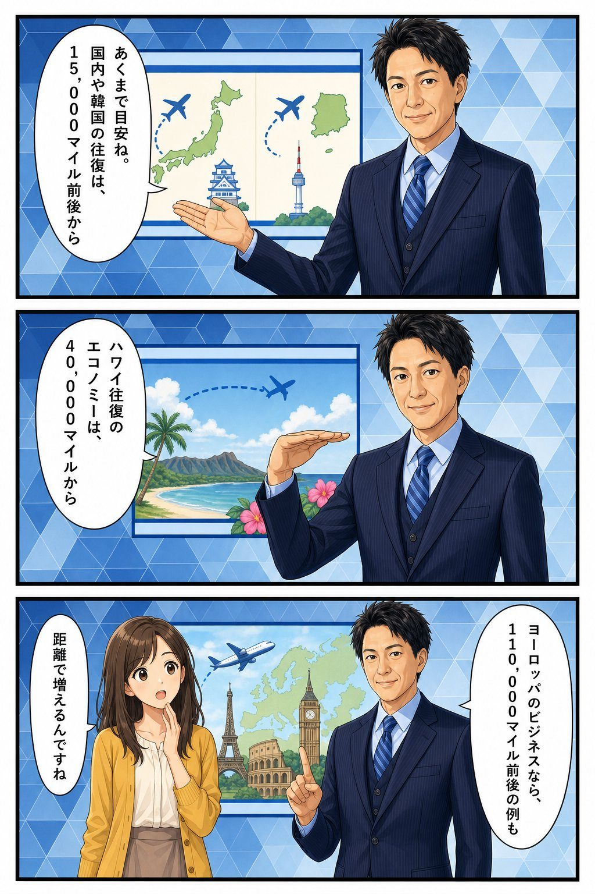
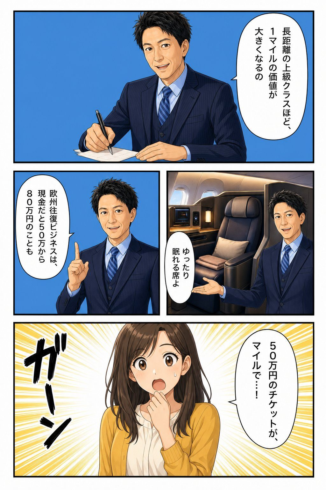
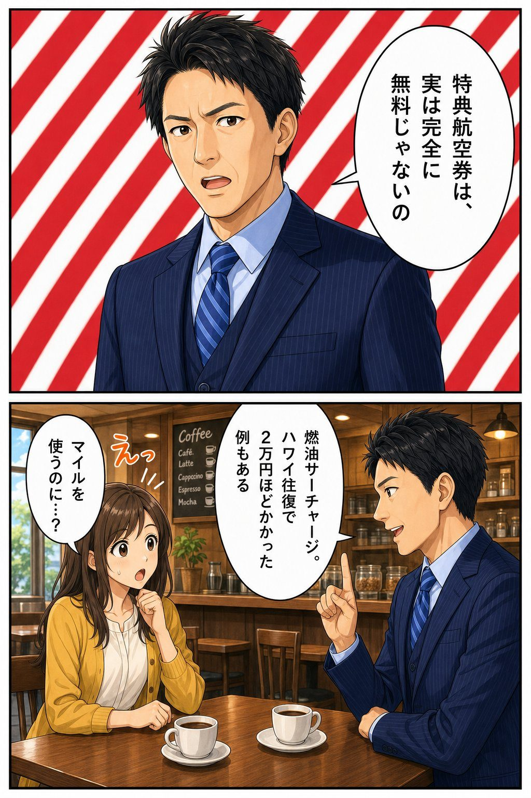
04第4章 いざ実践！はじめてのマイル旅
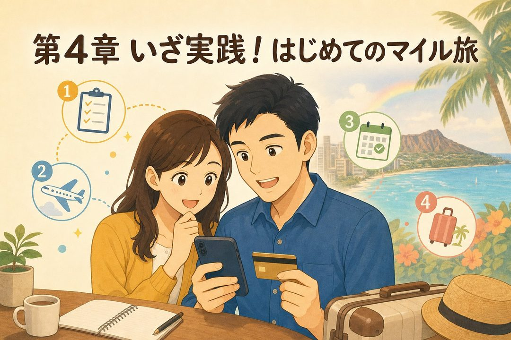
第4章 いざ実践！はじめてのマイル旅
第3章で、そらはマイルの「使い方」の全体像をつかみました。
ためる仕組みも、特典航空券の考え方も、頭では理解できた。
けれど、トモさんの言葉が耳に残っています。
「知っているだけでは、一マイルも増えないよ」。
そう、ここからが本番です。
この章では、そらが夫のケンタと一緒に、実際にハワイを目指して歩き出します。
「トモさん、正直まだ不安なんです。
何から手をつければいいのか」。
そう打ち明けるそらに、トモさんは笑って言いました。
「大丈夫。
順番どおりに一つずつやれば、誰でも空港に立てるから。
まずは全体の道のりを見てみようか」。
まずは全体像をつかむ。ゼロから旅立ちまでの8ステップ
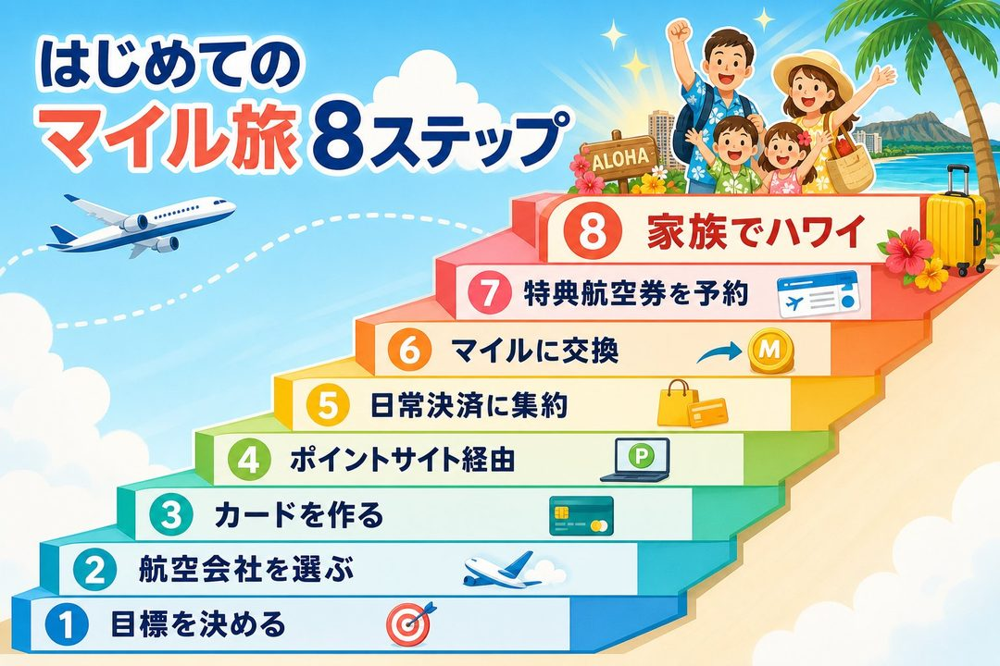
はじめてのマイル旅 8ステップ
トモさんが最初に強調したのは、順番の大切さでした。
「多くの人が挫折するのは、いきなりカードを何枚も作ろうとするから。
まず目標を決めること、これが一番の原動力になるんだ」。
「この8つはね、1と2で方針を決めて、3から6で習慣をつくり、7と8で実りを受け取る。
この地図があれば、今どこにいるか迷わなくなるよ」。
そらは手帳に階段の絵を描き写しました。
「私、まだ一段目にも乗ってないんですね」。
「でも、足をかけた瞬間から、もう旅は始まってる」。
STEP1は、行きたい場所を先に決めること。
そらとケンタの答えははっきりしていました。
「家族三人で、ハワイ」。
子どものユウトが小学校に上がる前に、青い海を見せてあげたい。
この具体的な絵があるかどうかで、続くかどうかが決まるとトモさんは言います。
「ためる理由が明確な人ほど、途中でやめないんだよ」。
「でも私、三日坊主なんです」。
トモさんは言いました。
「目標を、目に見えるところに貼ってごらん」。
その夜、ハワイの海の写真が冷蔵庫の扉に貼られ、ケンタが「……本気なんだな」とつぶやきました。
家族でハワイは、現金なら40万〜60万円ほどかかることもある旅です。
以前ならその数字で会話は終わっていました。
でも今回は、「無理」より先に「どうやって」が出たのです。
STEP2は、ANAかJALかを決めること。
そらは悩みましたが、トモさんのアドバイスはシンプルでした。
「普段の生活で使うサービスとの相性で選べばいいんだ。
よく乗る路線、よく使うお店やアプリ、貯めているポイントと交換しやすいか。
人によって正解が違うから、最新の提携先は公式で確認してね」。
そらは、自分たちが普段使うサービスと相性のいいほうを選びました。
「決めちゃえば、あとは迷わなくていいんですね」。
カードを1枚、そして日々の習慣へ
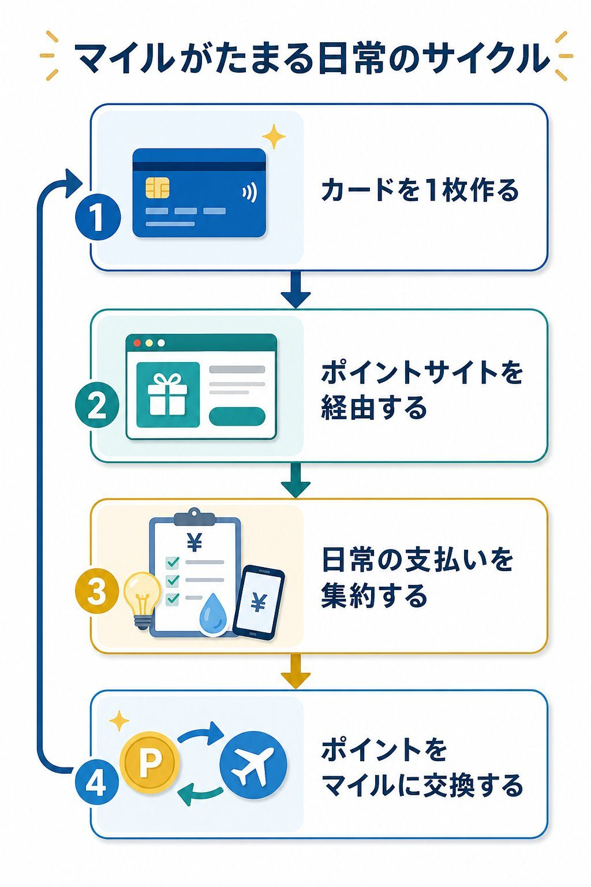
マイルがたまる日常のサイクル
STEP3は、マイルがたまるカードを1枚だけ作ること。
「1枚だけ、ですか？」と驚くそらに、トモさんはうなずきます。
「そう。
最初から欲張らない。
無理なく続く1枚から始めるのが鉄則。
年会費が気になるなら、まずは負担の軽いものでもいい。
年会費は、それ以上のリターンがあるかで付き合い方を考える経費だと思えばいいんだ」。
ケンタも「一枚なら管理できそうだな」と、ようやく前向きになってきました。
ここに至るまで、ひと悶着ありました。
ケンタは「クレジットカードを増やすのは怖い」と渋ったのです。
そらは正論で押し切らず、こう言いました。
「じゃあ一枚だけ。
半年やってダメならやめよう」。
家族を説得するコツは、論破ではなく引き返せる約束を用意することでした。
半年後、やめようと言い出す人は一人もいませんでした。
STEP4は、ポイントサイトを経由する習慣。
ネットで買い物をする前に、ポイントサイトをひと手間はさむだけ。
「これ、地味だけど効くんだ。
買うものは同じなのに、経由するかしないかで差がつく。
買い物の前に、ひと手間。
これを歯みがきみたいに習慣にしちゃえば勝ち」。
そらはスマホのホーム画面に、ポイントサイトのアイコンを一番押しやすい場所へ移しました。
それでも最初の一か月は失敗の連続でした。
急ぐときほど癖でお店のアプリを直接開き、買い終えてから「あっ、経由し忘れた！」と気づくのです。
「向いてないのかも」と落ち込むそらに、トモさんは言いました。
「意志で覚えようとするから続かないの。
仕組みで思い出すんだ」。
そらはアイコンをお店のアプリのすぐ隣へ移し、買い物メモの一行目に「まず経由」と書き足しました。
STEP5は、日常の支払いをカードに集約すること。
光熱費も、スーパーの買い物も、できる範囲で1枚にまとめる。
「これはね、家計の見える化も兼ねているんだ。
何にいくら使ったか、明細で一目でわかるようになる。
旅の準備が、家計改善にもなるんだ」。
実際、そらの家では「なんとなく現金で消えていたお金」の正体が見えるようになり、ケンタが一番驚いていました。
正直、このステップがいちばん面倒でした。
各社のサイトにログインし、忘れたパスワードを再設定し……。
一気に片づけようとして、そらは三つ目で嫌になります。
「全部やろうとしないで。
日曜の夜に、ひとつだけ」。
一か月後、固定費はほぼ一枚に集まり、明細を見たケンタが言いました。
「なあ、この毎月出てる料金、俺たち使ってないよな？」。
STEP6は、たまったポイントをマイルに交換すること。
日々の決済やポイントサイトでたまったポイントを、選んだ航空会社のマイルへ移す。
「交換のレートや期間限定のキャンペーンは変わることがあるから、そこも最新を公式で確認ね。
あわてなくていい、コツコツでいいんだ」。
そらは、この交換ボタンを押すのが少し怖かったそうです。
損なレートで換えてしまうのでは。
けれど、ポイントのままでは旅になりません。
数日後、口座に初めて「マイル」の数字が並びました。
「これ、ハワイにつながってる数字なんだ……！」。
予約から搭乗まで。そして、憧れの空へ
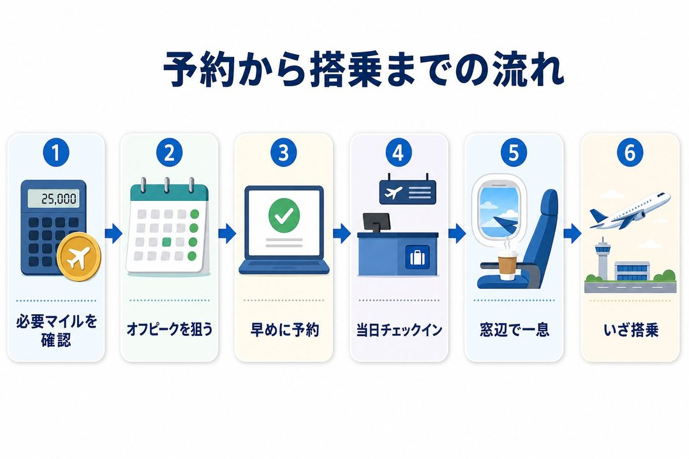
予約から搭乗までの流れ
数か月後。
そらのマイルは、少しずつ、でも確実に積み上がっていきました。
そしてついにSTEP7、特典航空券の予約です。
ハワイ往復のエコノミーに必要なマイルは、40,000マイルほどからが一つの目安とされています。
ただし時期や条件で動き、混む時期にはもっと必要になることもあります。
だからそらは、目標をぴったりではなく少し余裕をもたせました。
目標は、届く数字よりほんの少し上に置くのがコツです。
「トモさん、予約でコツはありますか？」。
「二つだけ。
早めに動くことと、オフピークを狙うこと。
特典航空券は席数が限られているから、人気の時期はすぐ埋まる。
予約開始の時期を調べて、動けるようにしておくといいよ。
それに、混む時期を外せば必要なマイルの目安も抑えやすい」。
そらは、ユウトの長い休みと、少しだけ時期をずらせる候補日をいくつか用意して、席が取れた日に狙いを定めました。
画面に「予約完了」の文字が出た瞬間、思わずケンタと顔を見合わせました。
「本当に、取れた」。
受付開始の朝、そらは早起きしてスマホとパソコンを開いて待ちました。
ところが第一候補の日は、空席が出ません。
折れかけたそのとき思い出したのが、用意しておいた第二、第三の候補日でした。
ずらして探し直すと、三つ目に家族三人分の席がぽつんと残っていたのです。
候補日を複数持っていた人だけが、席にたどり着ける。
最後には燃油サーチャージや税金の支払いもありますが、第3章で学んでいたそらは慌てませんでした。
そしてSTEP8、いざ搭乗の日。
空港のカウンターで手続きを終え、家族三人で歩き出します。
搭乗ゲートの前、大きな窓に面した待合スペースに腰を下ろしました。
売店で買ったコーヒーを片手に、そらはふとこみ上げるものがありました。
「あの時、面倒だなって思いながらポイントサイトを経由した自分に、ありがとうって言いたい」。
ユウトは大きな窓に張りついて、飛び立つ飛行機に手を振っています。
小さな習慣の積み重ねが、家族をハワイまで連れてきてくれたのです。
前の晩、ユウトは興奮して眠れず、何度もスーツケースを開け閉めしていました。
機体が滑走路を走り出した瞬間、そらの脳裏に浮かんだのは、冷蔵庫に貼ったあの写真でした。
数時間後、扉が開くと、少し湿って甘い匂いのする風が流れ込んできます。
「ママ、海だ！本物の海だ！」と叫ぶユウト。
そらは、返事ができませんでした。
「うちには無理」だと思っていた場所に、家族は確かに立っていました。
つまずいたときの、やさしい処方箋
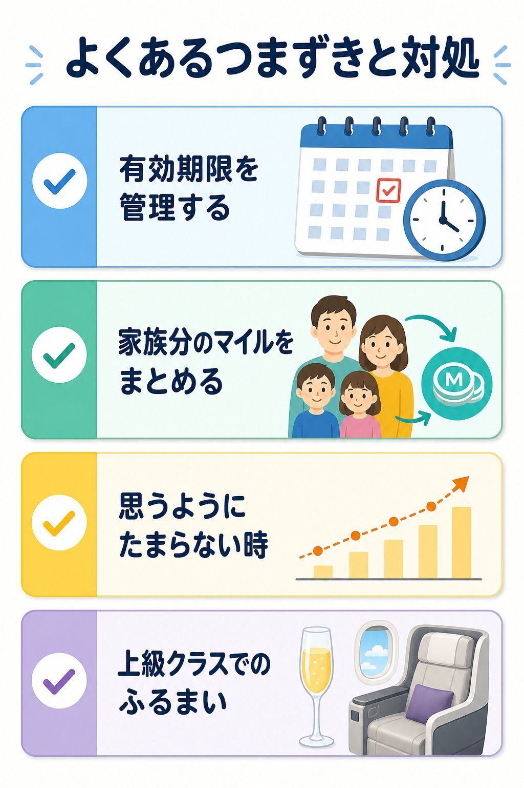
よくあるつまずきと対処
もちろん、そらの道のりも順風満帆ではありませんでした。
ここで、途中でぶつかった「あるある」を紹介します。
一つ目は、マイルの有効期限。
「せっかく貯めたのに、気づいたら消えていた、なんて悲しすぎる」とトモさん。
マイルには期限があるので、いつまでに使うかをカレンダーに書いておくのがおすすめです。
期限は、貯める前から意識しておくと安心です。
期限の目安は、貯めた月からおよそ3年（36カ月）とされています。
「3年もあるなら余裕」と言うそらに、トモさんは首を振りました。
「マイルはね、入ってきた時期ごとに別々の期限を持ってるの。
古いものから静かに消えるから、残高だけ見てると気づけないんだよ」。
そらの対策は地味です。
毎月一日に残高と期限を確認し、いちばん早く切れる月をカレンダーに書く。
「消えるくらいなら、形を変えて使う。
それも正解だから」。
二つ目は、家族分のマイルの合算。
「そらの分とケンタの分、別々だと目標まで遠く感じるよね」。
同じ家族なら、条件を満たすことでマイルをまとめて使える仕組みがある場合があります。
制度や条件は変わることがあるので、これも最新を公式で確認しながら、家族で協力して一つの目標に向かうのがコツです。
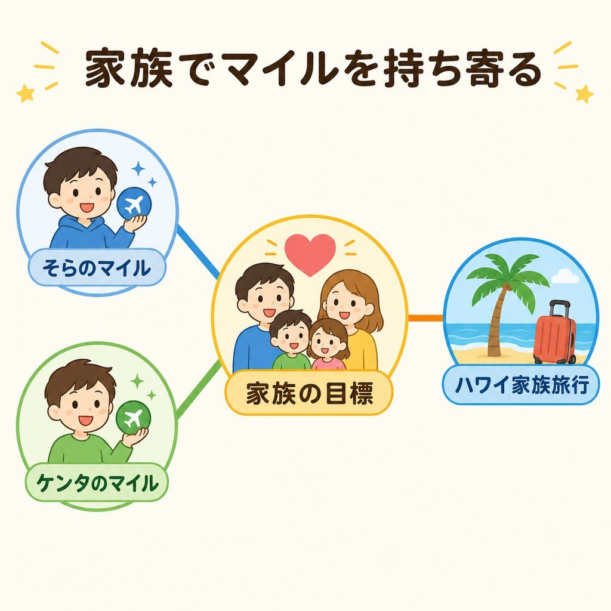
家族でマイルを持ち寄る
そらの家では、この合算が突破口になりました。
「妻の趣味」という顔をしていたケンタが、自分の払った分もハワイに届くと知った途端、「じゃあ会計は俺がまとめて払うわ」と言い出したのです。
巻き込むコツは、その人の行動が目標にどうつながるかを見せることでした。
「合算は、ためる前に条件を確認しておく。
ここだけは先回りしてね」。
三つ目は、思うように貯まらない時期のリカバリー。
「誰でも必ず、伸び悩む時期が来るんだ」とトモさんは言います。
そんな時は、ポイントサイトのキャンペーンを活用したり、大きな買い物のタイミングを見直したり。
焦って高額な支出を増やすのは本末転倒です。
「貯まらない時ほど、目標の写真を見返すんだ。
ハワイの海を思い出せば、また続けられるから」。
そらにも、数字がほとんど動かない時期がありました。
焦って不要な買い物に手を伸ばしかけた彼女を、トモさんが止めます。
「それ、旅のために家計を壊してるよ。
マイルは節約の延長線上にあるもので、浪費の言い訳じゃない」。
見直すのは三つだけ。
経由し忘れ、カードに寄せ忘れた支払い、そして大きな買い物のタイミング。
そらの場合、帰省費用と買い替え予定の家電が、まるごと漏れていました。
停滞は努力不足ではなく、取りこぼしに気づいていないだけだったのです。
そして最後に、少しだけ笑ってしまう小ネタ。
もし特典航空券で上級クラスに乗れる日が来ても、「うれしくて羽目を外しすぎないこと」とトモさんはいたずらっぽく付け加えました。
「シャンパンを何杯もおかわりして、はしゃぎすぎちゃう人がたまにいるんだ。
せっかくの上質な時間だから、スマートに、余裕をもって楽しんでね」。
そらは思わず吹き出しました。
「トモさん、それ経験談ですか？」。
「ノーコメント」。
こうして、そらは家族との忘れられない時間を手に入れました。
青い海、ユウトのはしゃぐ声、隣で笑うケンタ。
マイルは、ただの飛行機のチケットではありませんでした。
それは、家族の笑顔と、これまで諦めていた景色に手を届かせてくれる道具だったのです。
けれど、そらの物語はここで終わりではありません。
ハワイの砂浜で、そらはこう思ったのです。
「この旅で得たものは、思い出だけじゃない気がする」。
マイルを通して身についた習慣、家族で一つの目標に向かった時間、そして「自分にもできた」という小さな自信。
それらは、旅から帰ったあとの毎日をも変えていくものでした。
次の第5章では、そらが手に入れた「旅そのものよりも大切なもの」、マイルがもたらした人生の変化について、トモさんとゆっくり語り合っていきます。
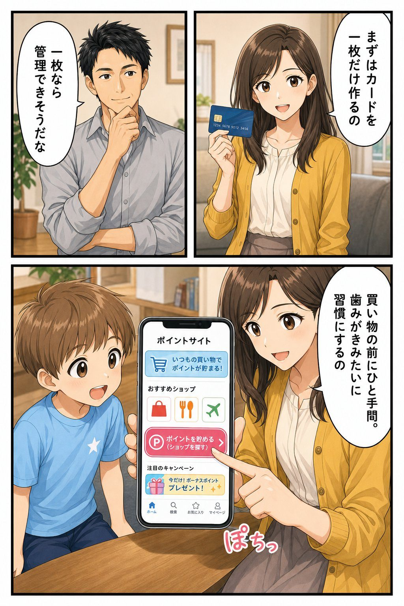
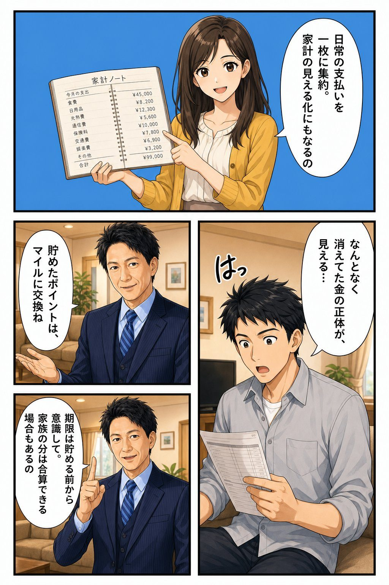
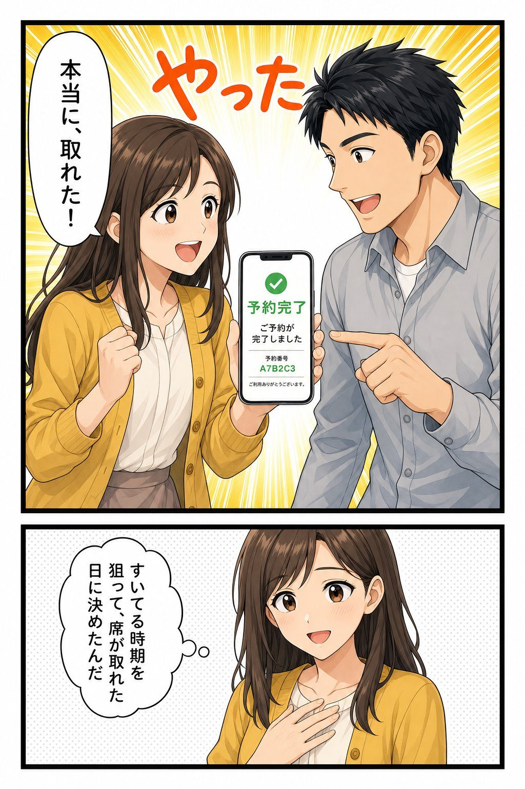
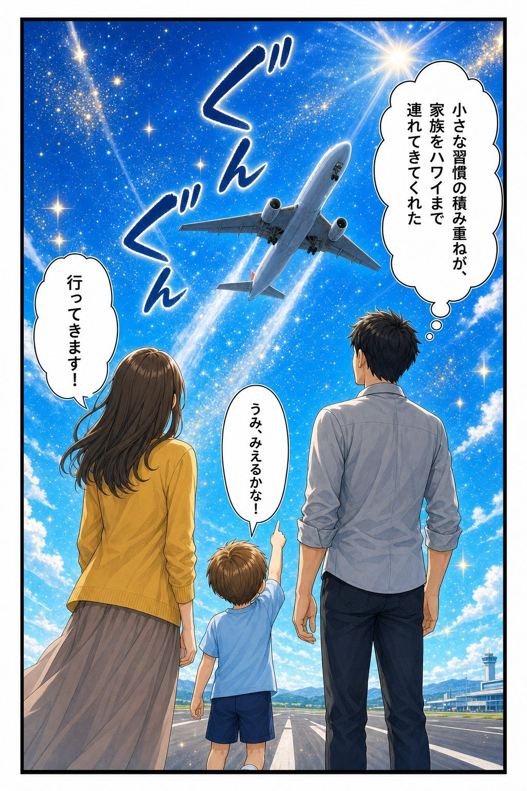
05第5章 マイルが運んでくれる、豊かな人生
第5章 マイルが運んでくれる、豊かな人生
ハワイの海の色を、そらはきっと一生忘れないでしょう。
家族の笑い声、夜のビーチを吹き抜けた風、子どもが「また行きたいね」とつぶやいたあの瞬間。
第4章で、そらは「行けない」と思っていた場所へ、確かに自分の足で立ちました。
帰国して数日が過ぎた、ある朝のことです。
そらはクローゼットの奥からスーツケースを引っぱり出し、片づけようとファスナーを開けました。
すると内側の縫い目のあたりから、さらさらと白い砂がこぼれ落ちてきたのです。
ワイキキの砂でした。
そらはしばらく、その小さな粒を指先でつまんだまま動けませんでした。
ほんの少し前まで、この砂の上に自分は立っていた。
洗濯機の回る音がする見慣れた洗面所で、その事実が急に現実味を帯びて、胸にすとんと落ちてきたのです。
けれど、そらが本当に手に入れたものは、ハワイ旅行そのものではなかったのかもしれません。
この章では、マイルがそらの人生に何を運んできたのか、その先にある「豊かさ」の話をしていきます。
「トモさん、私、旅行から帰ってきてから、なんだか世界の見え方が変わったんです」
「うん。
その感覚、すごく大事だよ。
マイルの本当の価値って、実はそこにあるんだ」
「本当の価値。……私、てっきり、安く飛行機に乗れることだと思ってました」
「それは入口だね」。
トモさんは、いつもよりゆっくりとカップを置きました。
「安く行けるのは、あくまで手段。
その手段が手に入ったあとに、そらさんの中で何が変わったか。
今日はその話をしようか」
「行けない」が「行ける」に変わるということ
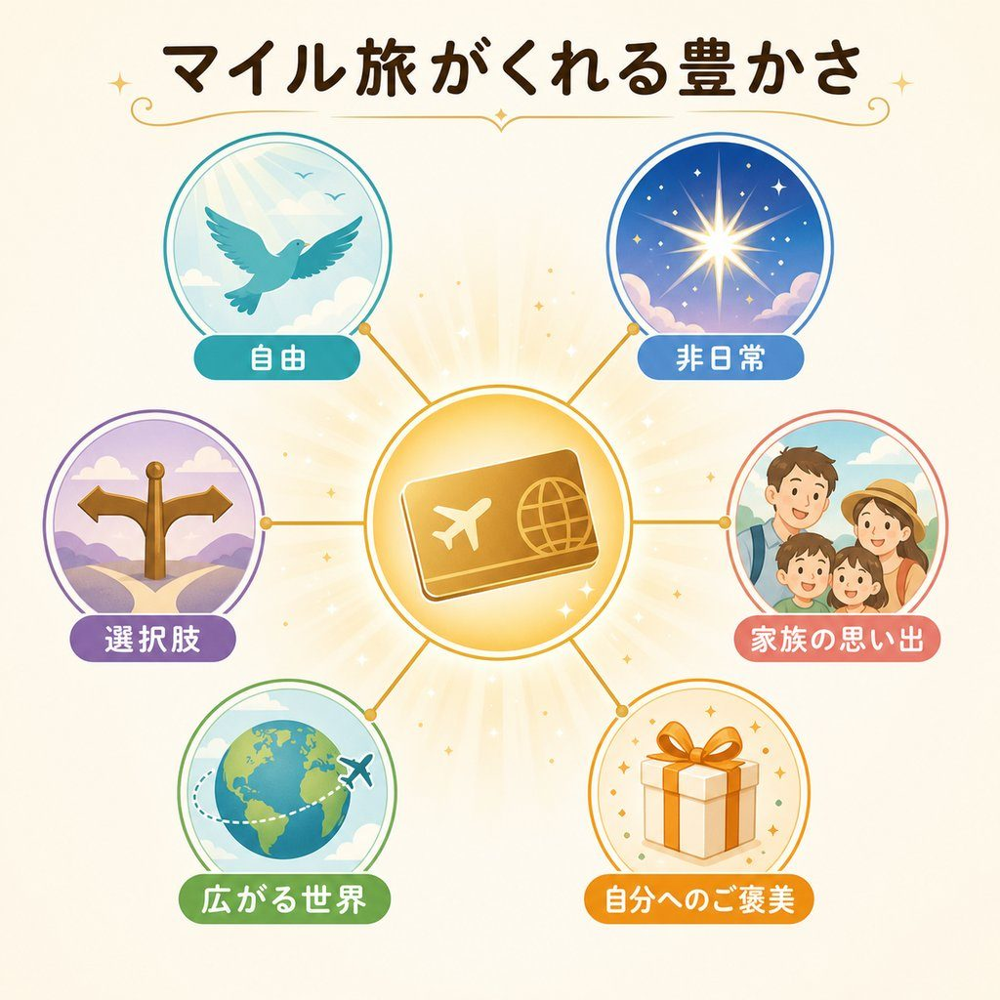
マイル旅がくれる豊かさ
そらはずっと、旅行を「特別な人のもの」だと思っていました。
お金に余裕がある人、時間に自由がきく人、そういう誰かのための世界だと。
だから旅の話題が出るたびに、心のどこかで小さくフタをしていたのです。
美容室で手渡された雑誌にハワイの特集が載っていれば、そっとページを飛ばしました。
テレビで旅番組が始まれば、なんとなくチャンネルを変えていました。
うらやましいと思うことすら、少しだけ疲れるからです。
見なければ、欲しがらずにすむ。
そらはそうやって、長いあいだ自分の願いに、静かに目をつぶってきました。
でも、マイルを知ってからは違いました。
「うちには無理」だったはずの場所が、「行こうと思えば行ける場所」に変わっていったのです。
この変化は、行き先が増えたという話ではありません。
心の中の選択肢が増えたということなのです。
「トモさん、前の私は、旅行の広告を見ても『いいなあ』で終わってました。
でも今は『これ、マイルで行けるかも』って考えるんです」
「その思考の切り替わりこそが、いちばんの財産なんだよ。
人はね、選べると思った瞬間に、世界が広がって見えるものなんだ」
自由に旅先を思い描ける感覚。
非日常に身を置いて、日常の自分をいったん脇に置ける時間。
家族と分かち合った思い出。
頑張った自分へのご褒美。
そのどれもが、マイルという小さな仕組みから生まれていきます。
マイルは、行き先ではなく生き方を変えるのです。
そして不思議なことに、旅から帰ったあとの日常まで、少しずつ色づいて見えてきます。
次はどこへ行こう。
そう考えるだけで、平凡な毎日にひとつ、楽しみの灯がともるからです。
その灯は、思いがけない場所でともりました。
ベランダで洗濯物を干していたとき、そらは頭の上を横切る飛行機を、いつのまにか目で追っている自分に気づきました。
以前なら、音がしても顔すら上げなかったのに。
「あの機体、どこ行きだろう」。
そう思った瞬間、洗濯かごを抱えたままのそらは、確かに少しだけ空とつながっていました。
駅の構内に貼られた旅のポスターも、そらの足を止めるようになりました。
前は素通りしていた一枚の写真の前で立ち止まり、知らない街の名前を口の中で転がしてみる。
スーパーの果物売り場でパイナップルを見かければ、ワイキキの朝食を思い出して、ひとりで笑ってしまう。
何ひとつ、特別なことは起きていません。
買い物も洗濯も、去年と同じです。
それでも、同じ景色の中に小さな扉がいくつも見えるようになった。
そらの毎日が変わったのは、そういう変わり方でした。
「トモさん、私、日常が退屈じゃなくなったんです。
毎日は同じなのに、なんでですかね」
「それはね、そらさんが『この日常の先に旅がある』って知っちゃったからだよ。
行き先を持っている人の毎日は、待ち時間じゃなくて助走になるんだ」
人生なんて、マイルで変わる
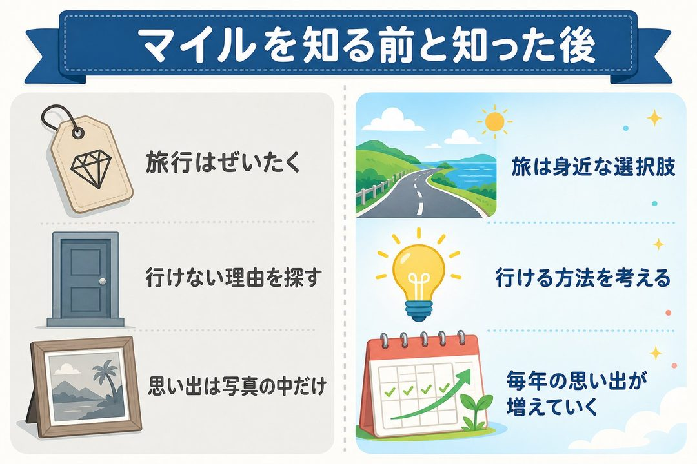
マイルを知る前と知った後
「人生なんて、マイルで変わる」。
そう言うと、大げさに聞こえるかもしれません。
けれど、そらの一年を振り返ると、それはけっして言いすぎではないのです。
以前のそらの旅は、数年に一度あるかないか。
思い出は、色あせた写真の中にだけありました。
ところがマイルを取り入れてからは、旅の回数そのものが増えていきました。
回数が増えれば体験が増え、体験が増えれば、家族で語り合える物語が増えていきます。
いちばん変わったのは、実は食卓だったかもしれません。
以前のそら家の夕食は、テレビの音が会話の代わりをしていました。
今は違います。
ユウトが「ねえ、次はどこ行くの?」と聞くところから、その日の食卓が始まるのです。
ケンタが箸を置いて、スマホで地図を開く。
「ここなんてどうだ、山がすごいらしいぞ」。
ユウトはリビングの隅から地球儀を抱えてきて、まだ読めない文字を指でなぞりながら「ここ!」と叫ぶ。
答えなんて出ません。
たいてい、話は脱線したまま「まあ、また今度考えよう」で終わります。
それでも、その三十分がそらは好きでした。
旅は、出発した日ではなく、食卓で語り始めた日から始まっているのだと気づいたからです。
ケンタの変化も、そらには意外でした。
あれほど「面倒くさい」と言っていた夫が、いつのまにか自分でマイルの残高を確認するようになっていたのです。
ある晩、ケンタがぽつりと言いました。
「なあ、来年の連休、俺の分と合わせたら足りるんじゃないか」。
そらは思わず顔を上げました。
以前の我が家には、「来年の連休」を家族で計画する習慣そのものがなかったからです。
「トモさん、体験って、増えれば増えるほど、なんだか自分の器が大きくなる気がします」
「そうなんだ。
旅って、行った先の景色だけじゃなくて、そこで感じたこと、迷ったこと、乗り越えたこと、全部が自分の中に積もっていくでしょう。
その積み重ねが、その人の厚みになるんだ」
大切なのは、これが特別な誰かの話ではない、ということです。
マイルは、普通の主婦でも、忙しい会社員でも、今日から始められます。
特別な才能も、まとまったお金も要りません。
必要なのは、少しの知識と、最初の一歩を踏み出す気持ちだけ。
かつて一部の人だけのものだった旅が、誰にでも手が届くものになっていく。
これはいわば、旅の民主化なのです。
そのことを、そらは思わぬ形で実感しました。
公園の砂場のそばで、ママ友がこぼしたのです。
「そらさんちのハワイ、写真見たよ。
いいなあ。
うちなんて絶対無理」。
その「絶対無理」は、少し前まで、そら自身が毎日つぶやいていた言葉でした。
だからそらは、笑って流さずに、こう言ったのです。
「あのね、私も去年まで、まったく同じこと言ってたの。
今も貯金が増えたわけじゃないよ。
ただ、買い物の前にひと手間かけるようになっただけ。
それだけで、私にもできたよ」
ママ友は、きょとんとした顔でそらを見つめ、それから「……ちょっと、詳しく教えて」と身を乗り出しました。
その瞬間、そらの胸に温かいものが広がりました。
自分がトモさんから受け取ったものを、今、誰かに手渡している。
知識は、渡した数だけ誰かの「無理」を溶かしていくのだと、そらは知りました。
「私みたいな普通のパート社員でもできたんだから、きっと誰にでもできますよね」
「うん。
そらさんが証明してくれたよ。
だからこそ、そらさんの言葉には力があるんだ」
続けるコツと、マイルがくれる財産
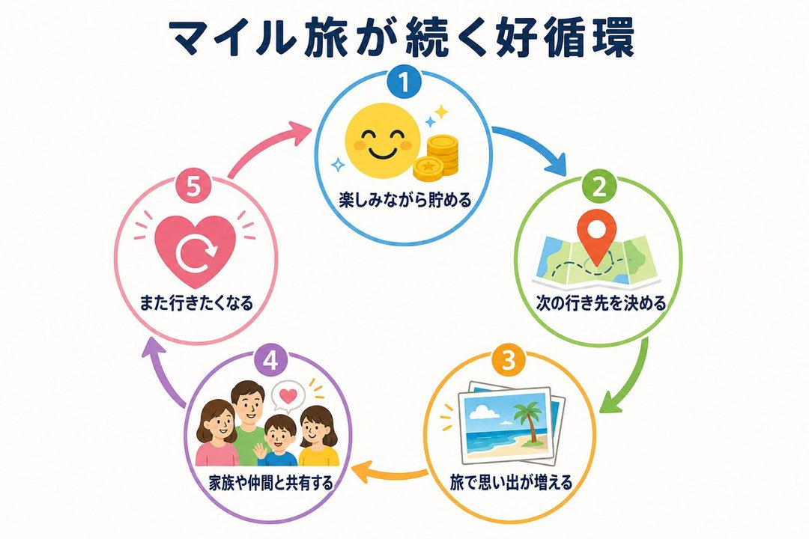
マイル旅が続く好循環
マイルを長く続けている人には、共通点があります。
それは、頑張っていないこと。
もっと正確に言えば、頑張らずに楽しんでいるということです。
続けるコツは、とてもシンプルです。
ひとつめは、楽しむこと。
義務になった瞬間に、旅はときめきを失ってしまいます。
そらも一度だけ、しんどくなった時期がありました。
残高を毎日確認しては、増えの遅さにため息をついていたころです。
トモさんはそれを聞いて、こう言いました。
「そらさん、しばらく残高を見るのをやめてごらん。
植えたばかりの種を毎日掘り返す人はいないでしょう」。
言われたとおり数週間ほど放っておいて、ひさしぶりに開いた画面の数字は、ちゃんと育っていました。
ふたつめは、次に行きたい場所を先に決めておくこと。
ゴールがあるからこそ、日々の小さな積み重ねに意味が生まれます。
そら家では、冷蔵庫にハワイの写真を一枚貼ってあります。
ユウトが波打ち際で転んだ、あの決定的にまぬけな一枚です。
買い物のメモを取るたび、それが目に入る。
理屈より、この一枚のほうがずっと効くのだと、そらは笑います。
「トモさん、私、次は子どもと一緒に海外の街を歩くのが夢なんです。
それを思うと、毎日のちょっとした工夫も楽しくて」
「いいね。
行き先が決まってる人は、続くんだ。
マイルは、夢に日付を入れる作業でもあるんだよ」
みっつめは、無理をしないこと。
生活を切り詰めてまで貯めるものではありません。
日常のなかで自然にたまっていく範囲で十分です。
「旅のために今日を我慢する」が始まると、それはもう、豊かさとは逆の方向に歩いています。
そらが決めているルールはひとつだけ。
要らないものは、どんなにポイントがついても買わない。
旅は、暮らしを削って手に入れるものではないからです。
よっつめは、家族や仲間と分かち合うこと。
「次はどこに行こうか」と食卓で語り合う時間そのものが、もう旅の一部なのですから。
そら家では、ケンタが「航空券を探す係」、ユウトが「行きたい場所を指さす係」、そらが全体の舵取り。
役割があると、家族の中で旅が「そらの趣味」ではなく「うちの計画」になります。
ひとりで背負っている限り、それはいつか負担になる。
誰かと分け合った瞬間に、それは楽しみに変わるのです。
そしてマイルが最後にくれるもの。
それは、お金では買えない選択肢という財産です。
行こうと思えば行ける。
会いたい人に会いに行ける。
見たかった景色を、この目で見られる。
選べる自由こそが、いちばんの豊かさなのです。
それは、通帳の残高には表れない、経験と時間の豊かさなのです。
そして、この財産にはもうひとつ、そらが後から気づいた性質がありました。
誰にも奪われない、ということです。
景気が悪くなっても、流行が変わっても、ハワイの夜風の記憶も、家族で一つの目標に向かった時間も、そらの中から消えません。
貯めたマイルは使えばなくなりますが、マイルが連れていってくれた場所は、一生残るのです。
「トモさん、マイルって、お得に旅する技術だと思ってました。
でも本当は、人生を選べるようになる技術なんですね」
「そこまでたどり着いてくれて、うれしいよ。
そらさんはもう、自分の力で世界を広げられる人になったんだから」
ここまで読んでくださったあなたへ。
かつてのそらと同じように、「うちには無理」と思っているかもしれません。
でも、大丈夫です。
最初の一歩は、驚くほど小さくていいのです。
カードを一枚作ってみる。
行きたい場所をひとつ思い描いてみる。
それだけで、あなたの世界は静かに動きはじめます。
あなたの旅は、今日から始められます。
急がなくて構いません。
今日ぜんぶを理解する必要も、明日から完璧にやる必要もありません。
この本を閉じたあと、スマホの地図を開いて、行ってみたい街をひとつ眺めるだけでもいい。
その数分が、あなたにとっての「食卓で語り始めた日」になるかもしれないのですから。
そらだって、特別な人ではありませんでした。
ただ、うらやましいと思う気持ちにフタをするのを、ある日やめてみただけです。
あなたが今、この本を手に取っているということは、あなたの中にも、まだ消えていない行きたい場所があるということです。
どうか、そのフタを開けてあげてください。
そらが手にした、この晴れやかな景色。
次は、あなたが立つ番です。
あきらめていた私と、次の旅を計画する私
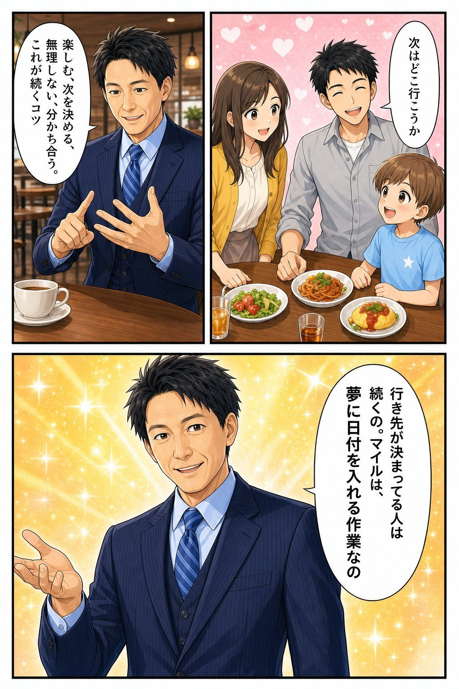
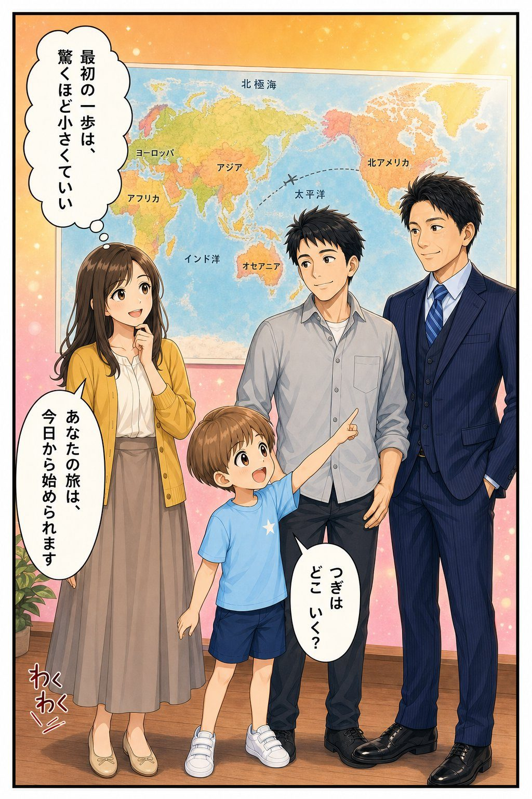
06おわりに
おわりに
ここまで読んでくださって、本当にありがとうございました。
最後に、少しだけ、私自身のリアルな話をさせてください。
マイルに出会う前までの私は旅行に興味がありませんでした。
いや、心の底では興味があったのに、費用がかかる、お金が減る、なにかを犠牲にするかもしれないと、他のことと旅を天秤にかけて、興味にふたをしていたのだと思います。
私自身は保険代理店などの事業をやっていますので、この本の主人公そらよりも有利な状況であることは確かです。
それでも、新婚旅行で行ったグアム以来、25年もの間、海外に行ったこともありませんでしたし、国内をひとり旅したこともありませんでした。
そんな私が、１年で４～６回の海外旅行はほとんどビジネスクラス以上に搭乗し、息子たちともたくさんの旅をして、実り豊かな時間と体験を共有することができました。また、寝られさえすればいいと考え、できる限り安宿を探していたホテルにおいても、1泊10万円以上するような高級ホテルに無料や超お得に泊まるようになりました。今ではポイントやマイルを利用して、年間1000万円以上のお得旅をしています。
たくさんの旅を通して、息子たちの人生における視座が上がったと感じています。これがなによりも価値があったと思います。
また、年々早くなっていた１年という時間が、旅行にたくさん行くことで、とても長く感じています。これははっきり体感していて、同時に、自分の未来に対する期待感も上がっています。
これまでに、たくさんの失敗もしながら実践で得てきた経験やノウハウを体系化したオリジナルプログラムを作り、マイル旅の講座を主宰するようになりました。
かなり手厚いサポート付き講座にしていることもあり、講座生の目標達成率は143％となっています。 たとえば、年間の決済金額が120万円の講座生Jさん（調理師）は1年間で14万マイルを貯められました。
14万マイルはエコノミークラスならハワイ3.5往復分に相当します。それどころか、14万マイルあれば、本来150～250万円するはずのハワイ往復ファーストクラス（1人分）に搭乗することもできます。
ここで一番お伝えしたいのは、「私とは状況が違うから…」と諦めてしまえば可能性はゼロになりますが、ほとんどの人が「自分には無理」と思うようなことでも、正しいやり方を学び、正しく実践し続ければ人生の可能性は広がるということです。
私自身もマイルとの出会いによって人生が激変しました。それだけでなく、マイル旅講座の講座生も人生が大きく変わるきっかけになった人がたくさんいます。
このように、マイル旅を通して人生そのものが豊かで幸福になる人を増やしていきたいと願っています。
多くの人が身につけていないノウハウを身につけること 多くの人が越えられない壁を越えること
マイル旅は 諦めず、正しいやり方を学べば越えられる 適度な壁が存在します。
限られた人生の時間で多くの成功体験や果実を掴むためには 自分自身の時間、知恵、経験、努力だけでなく 他人の知恵やノウハウを吸収することがとても大切です。
ちなみに、私自身もマイルのことを知り、マイル旅できるようになりたいと考えて、すぐ他人の講座を４つ受講しました。一気に全体像を把握できたことが大きかったです。
私が受講したマイル講座はサポートがほとんどなかったため、「ここで多くの人がつまずきそうだな」と思う場面も多々ありました。
それらの経験を踏まえて、私の講座ではサポートの手厚いプログラムにして、受講生の成功確率が上がるようにしています。
その後のサポート付講座のことはさておき、まずは多くの人にマイル旅の価値や効果を知ってもらいたいと思い、無料の動画講座を用意してあります。ご興味のある方はこちらをご覧いただければ幸いです。
ここまでご購読いただいたあなたの人生が豊かで幸福なものになることを願っています。
それでは、マイル旅の世界へいってらっしゃい！ ※本書の実績は講座生の平均であり、成果には個人差があります。中には目標に届かない方もいらっしゃいます。無料個別相談ではうまくいった事例だけでなく、つまずいた事例も正直にお伝えしています。
無料動画講座のご案内
ハッピーマイル旅講座
「旅に行きたい。でも、お金がかかるから後回しにしてしまう」
そんな方へ。
旅を人生の優先順位に入れるなら、次に考えたいのは「どうすれば無理なく旅費を下げ、もっと自由に旅を楽しめるか」です。
無料動画講座では、クレジットカード・マイル・ポイントを活用して、旅行費用を賢く抑えながら旅の選択肢を広げる方法をお伝えしています。
「マイルは難しそう」「自分には関係ない」と感じていた方でも、基礎からわかる内容です。
ご登録は無料です。 下のQRコード、またはURLからご覧ください。

https://fp-miler.com/lps/prj1/opt1/
あなたの次の旅が、もっと身近で楽しいものになりますように。
親子３人で行ったマイル旅
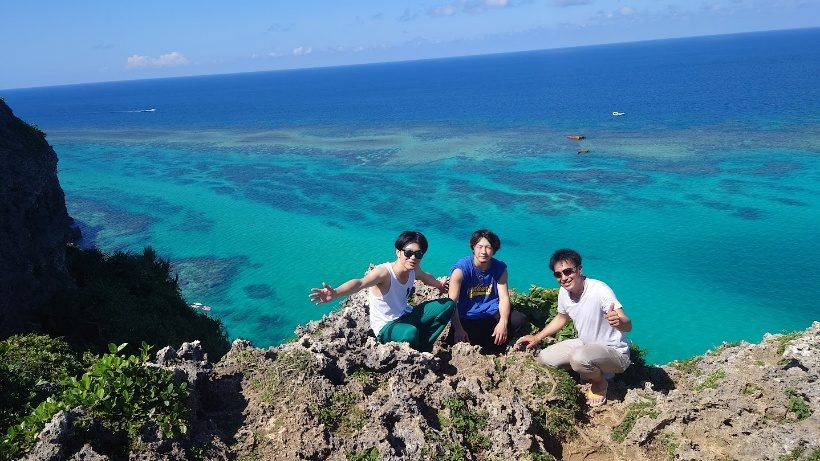
宮古島の絶景スポット
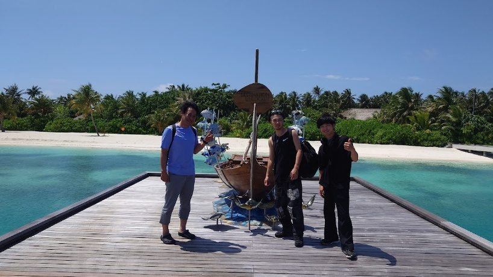
モルディブのリゾート島
ベルサイユ宮殿にて

ケアンズでのスカイダイビング
アメリカ･セドナで
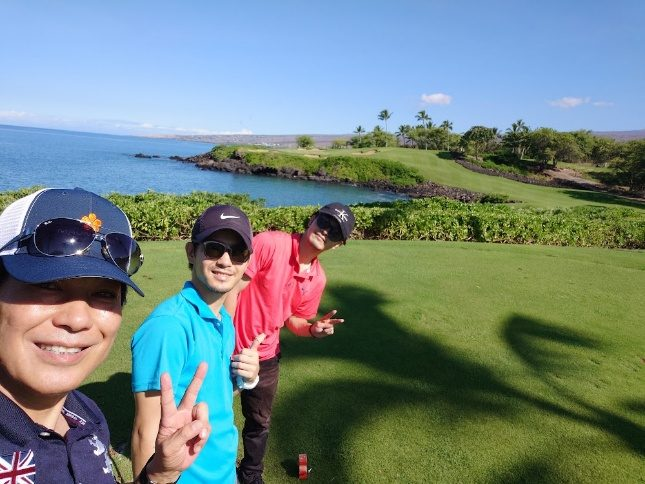
親子３人ハワイでゴルフ
◀ 他の書籍を見る© 竹谷知悦 / 特別プレゼント版